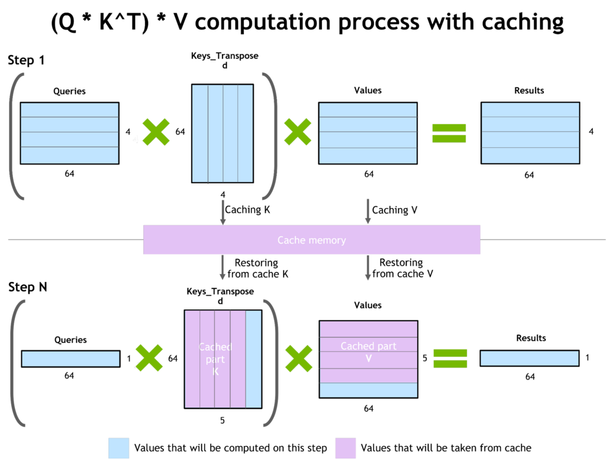
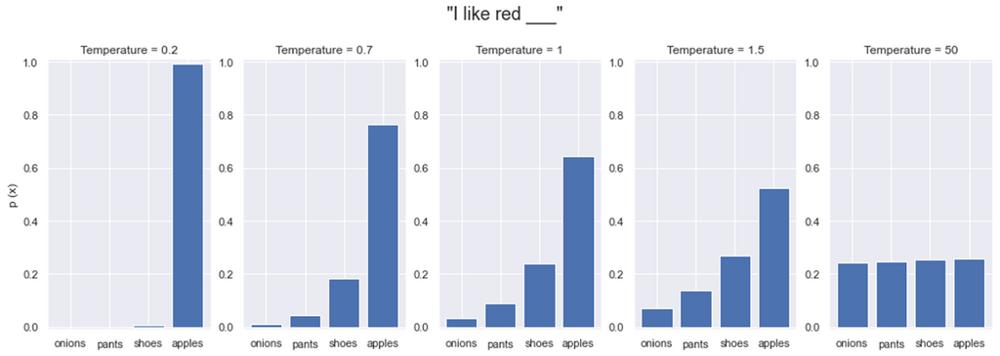
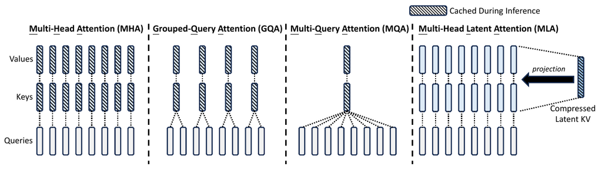
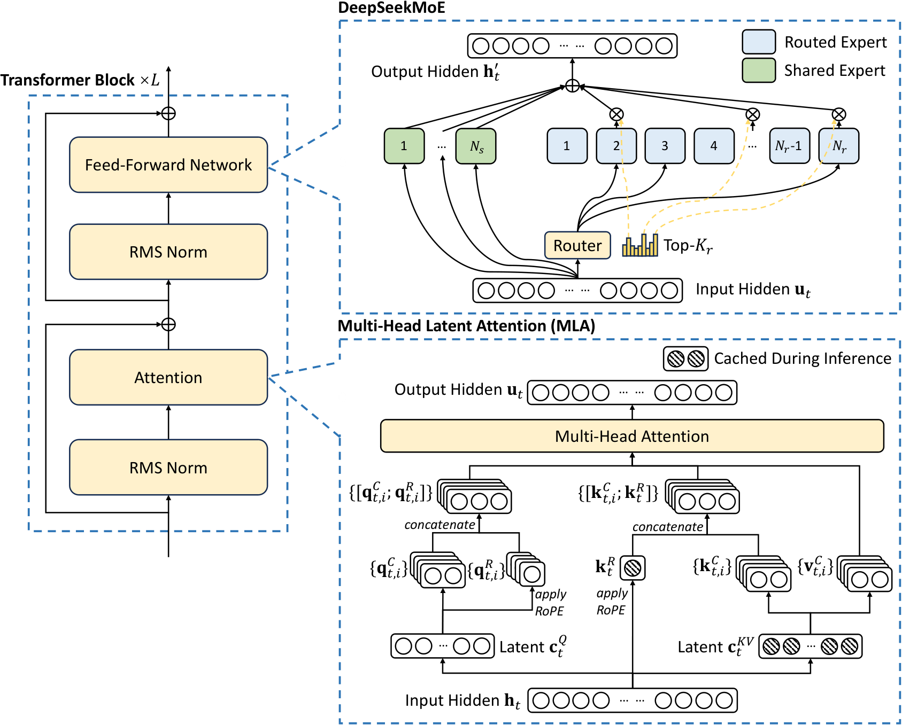
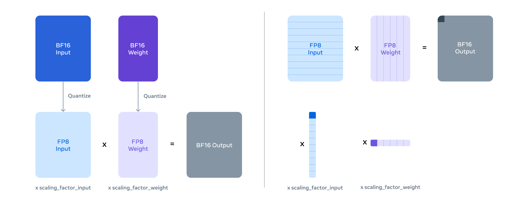
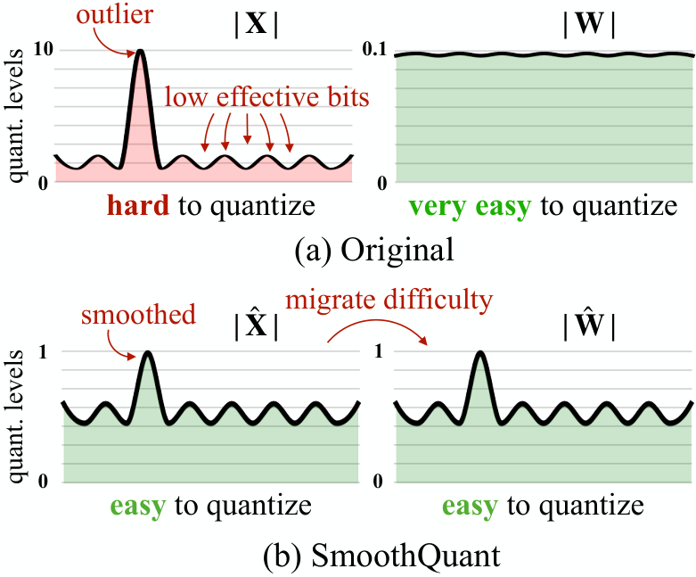
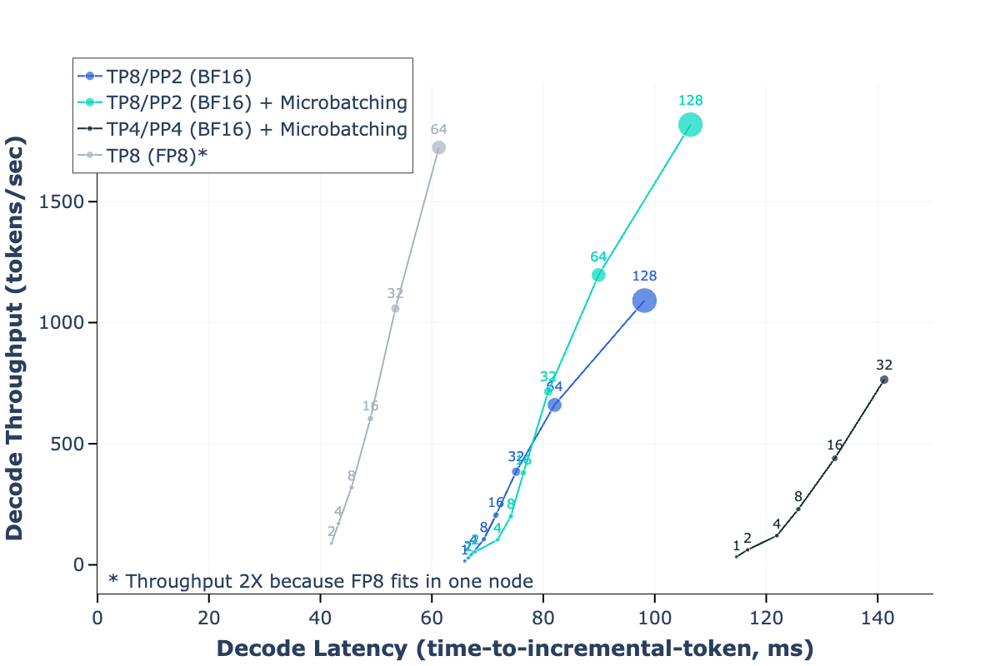

Inference Internals I: The Arithmetic of LLM Inference
Prerequisites
This chapter assumes you know transformer math and PyTorch, and nothing about the hardware or systems underneath. Read these first if a term below is unfamiliar:
- Computer architecture - memory hierarchy, bandwidth vs compute, why moving bytes costs more than doing math on them. Everything in this chapter is that idea applied to one workload.
- Networking - links, latency vs bandwidth, what an interconnect is. Needed for the tensor-parallel and expert-parallel communication sections.
- Distributed systems - collectives (all-reduce, all-to-all), sharding, load balancing. Needed for the TP and MoE sections.
- Model architectures - MHA, GQA, MQA, MLA, sliding-window attention and MoE, whose KV cache and FLOPs we size here.
- Parallelism From First Principles - tensor and pipeline parallelism, used in Model parallelism for inference.
- Helpful: GPU execution model - tensor cores and the per-op roofline, which this chapter re-derives briefly; Collective communication internals - the alpha-beta model and busbw used in the TP communication section; Training arithmetic - the 2N FLOPs-per-token forward-pass count.
You do not need the Linux, concurrency or beyond-transformers chapters for this one.
This chapter opens Part 6 with the vocabulary of inference - prefill and decode, the KV cache, batching, decoding methods, guided and speculative decoding, and the key performance metrics - and then does the arithmetic behind it: why decode is memory-bound, how big the KV cache really is, what the lower bound on per-token latency is, what tensor parallelism costs, what MoE and quantization do to bytes and FLOPs, and how to size a deployment against an SLO (service-level objective: a latency or throughput target you promise users, such as "p99 time to first token under 2 s"). How a serving engine actually schedules work - PagedAttention, continuous batching, chunked prefill, speculative decoding, prefix caching - is in the sibling chapter Inference Internals II: Inside a Serving Engine.
Every number below comes with the arithmetic that produced it; all non-trivial calculations were checked with Python. Numbers labelled bound are theoretical roofline limits, not measurements. Real systems are slower than every bound here. The only measured numbers used are ones the repo already publishes (matmul ceilings and all-reduce latencies) and ones from cited papers.
How to use the code in this chapter
Almost every section has a small, self-contained Python script: calculators that reproduce the chapter's tables, and quantization demos you can run and modify. Treat them as the real content; the prose explains what they print. All of them run on a laptop CPU. Two scripts (measure_roofline.py, measure_decode.py) time real matmuls and use Apple's mps GPU backend if present; on other machines change dev to "cuda" or "cpu".
$ python3 -m venv /tmp/inf-venv
$ /tmp/inf-venv/bin/pip install -q torch numpy
$ /tmp/inf-venv/bin/python -c "import torch, numpy, platform; print(torch.__version__, numpy.__version__, platform.python_version())"
2.15.0 2.5.4 3.14.5
Save each script under the file name in its first comment line (pareto.py imports decode_bound.py) and run it with /tmp/inf-venv/bin/python <file>. All outputs below were pasted from runs on an Apple M4 laptop (16 GB) with exactly that setup. The pure-arithmetic scripts produce the same output on any machine. The timing scripts are one run on one laptop: an anecdote, not a benchmark.
Three ideas the whole chapter rests on
If you are new to the systems side, these three ideas are everything you need to follow the rest:
- A GPU has two separate speed limits. One is how fast it can do arithmetic, measured in FLOP/s (floating-point operations per second; one multiply-add counts as 2 FLOPs). The other is how fast it can move bytes from its memory into the compute units, measured in bytes/s (memory bandwidth). An H100 does about 989 trillion BF16 FLOP/s but reads only 3.35 trillion bytes/s. That is about 295 FLOPs for every byte it reads.
- Generating one token reads every weight once. To produce the next token, the model multiplies that token's activations by every weight matrix in the network. A 70B model in BF16 is 141 GB of weights, so one token needs at least 141\ \text{GB} / 3.35\ \text{TB/s} = 42\ \text{ms} on one H100, however little math is involved. That one multiply-add per weight is far below the 295 the GPU could have done, so the arithmetic units mostly sit idle. We call this memory-bound.
- Batching shares that read. If 64 users each want their next token, you can read each weight once and use it 64 times. That costs 64 times the math but only slightly more bytes. Every serving trick in this chapter and its sibling comes down to doing more useful math per byte read, or reading fewer bytes.
# the three ideas, as arithmetic
peak_flops, hbm_bw = 989e12, 3.35e12 # H100 SXM: BF16 FLOP/s, HBM bytes/s
weights = 70.55e9 * 2 # Llama-3-70B in BF16, bytes
print(f"FLOPs per byte the GPU can sustain: {peak_flops / hbm_bw:.0f}")
print(f"time to read all weights once (1 GPU): {weights / hbm_bw * 1e3:.0f} ms")
for B in (1, 64, 256): # users decoded in the same step
flops = 2 * 70.55e9 * B
print(f"B={B:3d}: math {flops / peak_flops * 1e3:5.1f} ms vs weight read {weights / hbm_bw * 1e3:.0f} ms")
FLOPs per byte the GPU can sustain: 295
time to read all weights once (1 GPU): 42 ms
B= 1: math 0.1 ms vs weight read 42 ms
B= 64: math 9.1 ms vs weight read 42 ms
B=256: math 36.5 ms vs weight read 42 ms
Glossary
Inference has its own vocabulary of abbreviations. The ones used in this part of the book:
- CLA: Cross-Layer Attention - adjacent layers share one set of KV heads, shrinking the KV cache.
- FHE: Fully Homomorphic Encryption - see Privacy-preserving inference.
- GQA: Grouped-Query Attention - see MHA to MQA to GQA.
- ITL: Inter-Token Latency - the time between two consecutive output tokens of one request. Its mean is essentially TPOT; the distinction is made precise in Definitions.
- KV: Key Value - see The KV cache and KV caching below.
- LPU: Language Processing Unit™ - Groq's inference-only chip, see Inference chips.
- MHA: Multi-Head Attention.
- MLA: Multi-head Latent Attention - see MLA: Multi-head Latent Attention.
- MPC: Secure Multi-Party Computation.
- MQA: Multi-Query Attention.
- PPML: Privacy-Preserving Machine Learning.
- QPS: Queries Per Second - requests arriving (or served) per second.
- TPOT: Time Per Output Token - see Time per output token.
- TTFT: Time To First Token - see Time to first token.
The Concepts section below defines the rest of the terms as it goes.
Concepts
This section is the vocabulary of inference: what happens when a trained model answers a request, which knobs exist, and what each one costs. Each idea gets a short explanation here. The rest of this chapter does the arithmetic, and Inside a Serving Engine shows the machinery.
Prefill and decode
When a model answers a prompt, the work happens in two stages, and almost everything in this part of the book is about how differently they behave.
Prefill
During prefill, the model processes all the prompt tokens in parallel, just as in a training forward pass, and builds the KV cache that generation will use (see KV caching). Prefill is usually compute-bound: each weight that is read is used once per prompt token, so a 2,000-token prompt does 2,000 multiply-adds per weight read. Its latency contributes directly to TTFT and grows with input length; long prompts or too little compute can make prefill a major part of request latency.
Decode
During ordinary autoregressive decoding, the model generates one output token at a time from the prompt and the tokens generated so far. Token t+1 depends on token t, so the output steps of one sequence cannot run in parallel, and each step does one multiply-add per weight read. That is why decode is usually memory-bandwidth-bound (idea 2 above).
Which stage matters most depends on the workload and the metric. TTFT is sensitive to prompt length, prefill efficiency, scheduling and queueing. TPOT/ITL characterizes decode. End-to-end latency depends on input length, output length, batching, load and hardware. The two stages are measured against each other in What this means for prefill vs decode.
A one-line way to see the two stages in code, with a Hugging Face model (untested here; any causal LM works):
# prefill_decode.py - the two stages, spelled out (untested sketch)
out = model(input_ids=prompt_ids, use_cache=True) # prefill: (1, T_in) tokens in one pass
past, next_id = out.past_key_values, out.logits[:, -1].argmax(-1, keepdim=True)
for _ in range(max_new_tokens): # decode: one (1, 1) token per pass
out = model(input_ids=next_id, past_key_values=past, use_cache=True)
past, next_id = out.past_key_values, out.logits[:, -1].argmax(-1, keepdim=True)
Further reading: NVIDIA's inference optimization overview and LLM benchmarking metric definitions.
Anatomy of inference memory usage
Inference memory is quite different from training memory: there are no gradients and no optimizer states. What occupies accelerator memory is:
- Model weights.
- KV cache - the keys and values of every past token, kept so they need not be recomputed for each new token.
- Activation memory - temporary buffers for the forward pass in flight, which depend on the batch size and the number of tokens processed in the step.
Model weights
Weight memory is bytes per parameter times the number of parameters. Bytes per parameter for each dtype:
- 4 bytes for fp32
- 2 bytes for fp16/bf16
- 1 byte for fp8/int8
- 0.75 bytes for fp6 or 6-bit quantization
- 0.625 bytes for 5-bit quantization
- 0.5 bytes for fp4/int4
- 0.375 bytes for 3-bit quantization
- 0.25 bytes for 2-bit quantization
- 0.125 bytes for 1-bit quantization
These are densely packed payload sizes. Real weight storage is somewhat larger, because quantized formats also store scales, zero points, codebooks, padding/alignment, and keep selected tensors in a wider format (Bits per weight including metadata counts this exactly).
The OCP microscaling (MX) formats use one 8-bit E8M0 scale (a power of two) per block of 32 values. Including that shared scale, their packed sizes are 1.03125 bytes for MXFP8/MXINT8, 0.78125 for MXFP6 and 0.53125 for MXFP4 (NVFP4 and MXFP4 shows how they work).
# weight_bytes.py - weight memory of an 8B-parameter model in each dtype (dense payload only)
N = 8.03e9 # Meta-Llama-3.1-8B
bytes_per_param = {"fp32": 4, "fp16/bf16": 2, "fp8/int8": 1, "fp6 / 6-bit": 6/8, "5-bit": 5/8,
"fp4/int4": 4/8, "3-bit": 3/8, "2-bit": 2/8, "1-bit": 1/8,
# OCP MX formats: one 8-bit E8M0 scale shared by each block of 32 elements
"MXFP8/MXINT8": 1 + 1/32, "MXFP6": 6/8 + 1/32, "MXFP4": 4/8 + 1/32}
for name, b in bytes_per_param.items():
print(f"{name:14s} {b:8.5f} B/param -> {N * b / 1e9:5.1f} GB")
Output of python weight_bytes.py:
fp32 4.00000 B/param -> 32.1 GB
fp16/bf16 2.00000 B/param -> 16.1 GB
fp8/int8 1.00000 B/param -> 8.0 GB
fp6 / 6-bit 0.75000 B/param -> 6.0 GB
5-bit 0.62500 B/param -> 5.0 GB
fp4/int4 0.50000 B/param -> 4.0 GB
3-bit 0.37500 B/param -> 3.0 GB
2-bit 0.25000 B/param -> 2.0 GB
1-bit 0.12500 B/param -> 1.0 GB
MXFP8/MXINT8 1.03125 B/param -> 8.3 GB
MXFP6 0.78125 B/param -> 6.3 GB
MXFP4 0.53125 B/param -> 4.3 GB
How to read it: Meta-Llama-3.1-8B in bf16 needs about 2\ \text{bytes} \times 8\text{B params} = 16\ \text{GB} just for weights, before any KV cache. The MX rows are 3% larger than their plain counterparts (one extra byte per 32 elements).
KV caching
It would be very expensive to recompute the keys and values (KV) of all previous tokens before each new token is generated, so they are cached in accelerator memory, and each step appends the newly computed K and V to the cache:

(source)
Past queries are never used again by attention, so they are not cached. KV cache size is directly proportional to sequence length and batch size. One token needs
bytes, where dtype_bytes is 4 for fp32 and 2 for bf16/fp16, the 2 is keys plus values, and the ratio num_key_value_heads / num_attention_heads is 1 for MHA, 1/\text{num\_attention\_heads} for MQA and in between for GQA. (hidden_size times that ratio equals n_{kv} \cdot d in the notation of Formulas, which derives the same thing and checks it against real tensors.) You can read all these values from the model's config.json, e.g. meta-llama/Meta-Llama-3.1-8B.
# kv_llama31.py - KV cache of Meta-Llama-3.1-8B in bf16
per_tok = 2 * 2 * 32 * 4096 * 8 / 32 # bf16 bytes * (K,V) * layers * hidden * kv_heads/heads
print(f"1 token: {per_tok/1e6:.3f} MB")
print(f"batch 1 x 1024 tokens: {per_tok*1024/1e6:.0f} MB")
print(f"batch 128 x 1024 tokens: {per_tok*1024*128/1e9:.1f} GB")
print(f"as MHA: {per_tok*4/1e6:.3f} MB/token as MQA: {per_tok/8/1e6:.4f} MB/token")
Output of python kv_llama31.py:
1 token: 0.131 MB
batch 1 x 1024 tokens: 134 MB
batch 128 x 1024 tokens: 17.2 GB
as MHA: 0.524 MB/token as MQA: 0.0164 MB/token
This model uses GQA with num_key_value_heads=8 and num_attention_heads=32, so it needs 1/4 of the MHA cache; MQA would need 1/32 of MHA, i.e. 8x less than GQA. At batch 128 the KV cache (17.2 GB) is already larger than the bf16 weights (16 GB).
DeepSeek-V2 introduced Multi-head Latent Attention (MLA), also used in DeepSeek-V3 (section 2.1.1), which compresses keys and values into one latent vector per token and shrinks the KV cache further. The MHA/GQA/MQA/MLA comparison diagram and the MLA byte counts are in Formulas and Real configs.
SwiftKV attacks a different part of the problem. Enterprise workloads often have a 10:1 ratio of prompt (prefill) tokens to generated tokens, so SwiftKV reduces prefill computation rather than just compressing memory: it rewires the model so later layers' KV is computed from an earlier layer's output and uses knowledge-preserving self-distillation to recover accuracy. The paper reports up to 2x better throughput, latency and cost with minimal accuracy loss.
The KV cache saves recomputation, but reading it costs bandwidth on every decode step. Dynamic Memory Compression: Retrofitting LLMs for Accelerated Inference puts it this way:
2.3. Memory-Bound and Compute-Bound Operations
Every operation performed with a GPU accelerator, such as General Matrix Multiply (GEMM), is either memory-bound or compute-bound. In the former case, the overall runtime is dominated by high bandwidth memory (HBM) access, while in the latter by the actual computations. Auto-regressive generation with Transformer LLMs, where the sequence length for every forward pass is n = 1, tends to be memory-bound rather than compute-bound. The vast majority of a forward pass is spent either processing linear layers (in MHSA, Feed-Forward, and output vocabulary projection) or calculating attention scores and outputs from Equation (4). For linear layers, the ratio of FLOPS to memory accesses improves as the batch size increases, and more FLOPS are performed with the set of layer weights retrieved from the HBM. Eventually, with a large enough batch size, linear layers become compute-bound. On the other hand, for the calculation of Equation (4) inside MHSA layers during auto-regressive inference, the ratio of FLOPS to input size remains constant, and MHSA layers are memory-bound regardless of the batch size. It follows that for those layers, latency scales linearly with the size of the KV cache.
Equation (4) is ordinary self-attention, \operatorname{softmax}(QK^\top/\sqrt{d})V, and MHSA is multi-head self-attention. Attention in decode derives the "memory-bound regardless of batch size" claim.
So a smaller KV cache means faster generation and more sequences per GPU. Techniques that shrink it include gisting (training the model to compress a prompt into a few special "gist" tokens), context distillation (fine-tuning the model to behave as if a long prompt were present without it), key-value eviction policies (dropping tokens), memory compression, multi-query attention, grouped-query attention, cross-layer attention, anchor-based self-attention, quantization and many others.
Online vs offline inference
When users send queries in real time, that is online inference, also called deployment or interactive inference. Examples: chatbots, search engines, general REST APIs. Here you always run an inference server (a long-running process that keeps the model loaded on the accelerators and answers requests over HTTP, usually with an OpenAI-compatible API), and many clients query it.
When you have a file with hundreds or thousands of prompts to run, that is offline inference, also called batch inference. Examples: benchmark evaluation and synthetic data generation. A server is often unnecessary; the inference runs directly in the program that holds the prompts (client and server in one application):
# offline.py - offline (batch) inference with vLLM: no server, one call (untested here; needs a GPU)
from vllm import LLM, SamplingParams
llm = LLM(model="Qwen/Qwen3-8B")
outputs = llm.generate(open("prompts.txt").read().splitlines(), SamplingParams(max_tokens=256))
The two cases are optimized for different metrics. Online inference needs low TTFT and low latency; offline inference needs high throughput. Combined prefill-plus-decode token throughput matters for both, because it sets the total cost of the service: online, better throughput means more users served on the same hardware; offline, the faster the job finishes, the less compute it costs.
Batching
Decoding one sequence at a time is extremely inefficient, because each step reads all the weights to do one multiply-add per weight. Batching several requests together lets one weight read serve all of them (idea 3). The maximum batch size is limited by the memory left after the weights and the KV cache (Max concurrent sequences).
Static batching
The naive approach: batch the first N queries together and run them to completion. Requests that finish early have to wait for the longest one in the batch before they are returned, and new requests wait for the whole batch, which greatly increases latency.
Continuous batching or in-flight batching
With continuous batching (also called in-flight batching), the engine removes each sequence as soon as it finishes and replaces it with a new request, without waiting for the rest of the batch. This works because every decode step is a separate forward pass that produces one token per sequence, so the batch can be re-formed between any two steps. Position 0 in the batch might be generating its 10th token while position 1 is generating its first and position 3 its last.
This improves response time: a finished sequence is returned immediately and a new prompt does not wait for a batch boundary. If the compute is fully busy and no batch slot is free, new requests still wait. The difference in numbers:
static: 16 requests -> 1 step of 16 sequences ... all wait for the longest -> next 16
continuous: step k = {seq 3 token 10, seq 7 token 1 (new), seq 9 token 412 (last)} -> seq 9 leaves, a new one joins
The scheduler that does this is covered in Continuous batching and the scheduler.
Paged attention
PagedAttention is used by essentially every inference server because it uses accelerator memory very efficiently: it manages the KV cache the way an operating system manages RAM with paging, which allows dynamic allocation and prevents fragmentation. The KV cache is split into fixed-size blocks (e.g. 16 tokens each), and each sequence keeps a block table mapping its logical token positions to physical blocks, so a sequence holds only as many blocks as it has tokens instead of a contiguous region reserved for the maximum length:
seq A block table: [7, 2, 9] -> tokens 0-15 in block 7, 16-31 in block 2, 32-40 in block 9 (partly full)
seq B block table: [4] -> 5 tokens, one block, no reservation for its max length
The mechanics (slot mapping, block size tradeoffs, copy-on-write sharing) are in PagedAttention.
Decoding methods
The model outputs a vector of logits over the vocabulary at each step; a decoding method turns it into the next token. The main ones are greedy decoding, beam search and sampling. The script below applies the ones that act on a single step to a toy six-word distribution; the subsections explain each line of its output.
# decoding.py - greedy, top-k, top-p and temperature on one toy next-token distribution
import math
vocab = ["tree", "pie", "juice", "drop", "grove", "car"]
logits = [3.0, 2.0, 1.5, 0.5, 0.0, -2.0] # (V,) scores for "another lemon ..."
def softmax(z):
m = max(z); e = [math.exp(x - m) for x in z]; s = sum(e)
return [x / s for x in e]
def show(title, probs):
print(f"{title:22s}" + " ".join(f"{w}={p:.3f}" for w, p in zip(vocab, probs) if p > 0))
p = softmax(logits)
show("t=1.0 (unchanged)", p)
print("greedy picks:", vocab[max(range(len(p)), key=p.__getitem__)])
k = 3 # top-k: keep k best, renormalize
keep = sorted(range(len(p)), key=p.__getitem__, reverse=True)[:k]
s = sum(p[i] for i in keep)
show(f"top-k k={k}", [p[i] / s if i in keep else 0 for i in range(len(p))])
def top_p_filter(p, top_p): # smallest set whose mass reaches top_p
cum, nucleus = 0.0, []
for i in sorted(range(len(p)), key=p.__getitem__, reverse=True):
nucleus.append(i); cum += p[i]
if cum >= top_p: break
s = sum(p[i] for i in nucleus)
return [p[i] / s if i in nucleus else 0 for i in range(len(p))]
show("top-p p=0.75", top_p_filter(p, 0.75))
for t in (0.25, 0.5, 2.0, 5.0): # temperature: divide logits, then softmax
show(f"t={t}", softmax([x / t for x in logits]))
# temperature applied before top-p changes which tokens enter the nucleus
show("t=2.0 then top-p 0.75", top_p_filter(softmax([x / 2.0 for x in logits]), 0.75))
Output of python decoding.py:
t=1.0 (unchanged) tree=0.578 pie=0.213 juice=0.129 drop=0.047 grove=0.029 car=0.004
greedy picks: tree
top-k k=3 tree=0.629 pie=0.231 juice=0.140
top-p p=0.75 tree=0.731 pie=0.269
t=0.25 tree=0.980 pie=0.018 juice=0.002 drop=0.000 grove=0.000 car=0.000
t=0.5 tree=0.837 pie=0.113 juice=0.042 drop=0.006 grove=0.002 car=0.000
t=2.0 tree=0.374 pie=0.227 juice=0.177 drop=0.107 grove=0.084 car=0.031
t=5.0 tree=0.245 pie=0.201 juice=0.181 drop=0.149 grove=0.134 car=0.090
t=2.0 then top-p 0.75 tree=0.481 pie=0.292 juice=0.227
How the production versions avoid a full sort and a GPU-CPU sync, and why the order of these filters matters, is in Sampling on the GPU.
Greedy decoding
Greedy decoding always picks the most probable token ("tree" above). It is the fastest method, but it does not always produce the best sequence: a locally best token can lead away from a much better continuation. A well-known failure is looping, where the same sentence repeats again and again.
Beam search
Beam search follows several candidate sequences at once instead of only the single best token. With beam size 3 it extends each of the 3 current candidates by its top 3 next tokens, keeps the 3 of those 9 (3 \times 3) sub-paths with the highest total probability, and repeats. At the end it returns the path with the highest probability over all its tokens:
step 1 beams: "another lemon" "another lime" "another apple"
step 2: 3 beams x 3 tokens = 9 candidates, scored by log p(whole path) -> keep best 3
It is slower than greedy decoding: with beam size n it generates n times as many tokens and needs n times the KV memory.
Sampling
Sampling introduces randomness: the next token is drawn from the probability distribution. Drawing from the whole vocabulary would occasionally pick nonsense from the long tail, so practical sampling keeps greedy-like reliability and adds controlled randomness by first cutting the tail:
- Top-k sampling keeps the k most probable tokens and draws one with probability proportional to their renormalized softmax probabilities ("top-k k=3": tree, pie, juice).
- Top-p sampling (also called nucleus sampling) is like top-k, but k varies per step: it keeps the most probable tokens until their cumulative probability reaches the threshold p. When the model is confident, only a few tokens qualify ("top-p p=0.75" keeps just tree and pie, whose mass is 0.578+0.213 = 0.79).
Temperature
Temperature t is an independent transformation of the logits that can be combined with top-k, top-p, both, or neither. It divides the logits before the softmax:
scaled_logits = logits / temperature
probs = softmax(scaled_logits)
Its effect by value:
- t=0.0: literal division by zero is undefined. Some APIs treat zero as shorthand for greedy decoding and others reject it, so use the API's explicit greedy mode when there is one.
- 0.0 < t < 1.0: probabilities are pushed further apart, so the closer to 0 the less randomness ("t=0.25" gives tree 0.98) - for precise to balanced use cases.
- t=1.0: no change; the model's trained distribution is preserved - balanced relevance and diversity.
- t>1.0: probabilities are pushed closer together, giving much more randomness ("t=5.0" is almost uniform) - for creative use cases.

(source)
Why it works: softmax turns logit differences into probability ratios (p_i/p_j = e^{(z_i - z_j)/t}). Dividing by t<1 enlarges the differences, giving more extreme ratios and a more peaked distribution; dividing by t>1 shrinks them, giving a flatter one. As t \to 0^+ the highest logit dominates.
For any positive temperature the rank order of logits is unchanged, so pure greedy argmax picks the same token. Sampling probabilities do change. With top-k the same k candidates stay eligible but their relative probabilities change. With top-p, temperature changes both which tokens enter the nucleus and their probabilities: the last output line keeps juice too, because at t=2 tree and pie hold only 0.60 of the mass. Beam search depends on the implementation's sequence scoring, so don't assume it is temperature-invariant. See the Transformers TemperatureLogitsWarper documentation.
There are no universal temperature values to copy; experiment for each use case, starting from the baselines people publish for similar tasks. For more on decoding methods, see the HuggingFace blog How to generate text.
Guided text generation
Also known as structured text generation or constrained decoding.
If the model must return its output in a specific format, you don't want it to produce an invalid one. If you ask for a JSON dict, you should get a JSON dict. Guided generation enforces that: instead of the most probable token overall, it picks the most probable token among those that fit the format at this position. For example, a JSON list of strings like ["apples", "oranges"] has the shape
["string", "string", ..., "string"]
123...
- The first token must be
[. If the model's top choice is"and[has lower probability, we still pick[. - The next token must be
". If it is not the top choice, go down the list until"is found and pick that. - The third token must be part of a valid string (not
[or"), and so on.
So for every next token we need the subset of allowed tokens, and we choose the most probable token from that subset. Rather than trying to repair malformed output afterwards, which is not always possible, the model generates valid output in the first place.
The technique has costs:
- It slows generation down, more so the more complex the schema. Measured generation speed differs a lot between structured-generation libraries.
- It may contribute to hallucination, because the model is forced down paths it did not prefer.
There are several implementations. As of 2026-08 vLLM supports four as structured output backends and picks one automatically unless you override it:
- https://github.com/mlc-ai/xgrammar
- https://github.com/guidance-ai/llguidance
- https://github.com/dottxt-ai/outlines
- https://github.com/noamgat/lm-format-enforcer
Prefer implementations already integrated into inference frameworks like vLLM. How a grammar becomes a per-step token mask, built and run end to end, is in Structured decoding.
Faster inference with guided generation
The schema can also make inference faster. Consider this simple "profile" schema:
{
"type": "object",
"properties": {
"name": { "type": "string"},
"age": { "type": "integer"}
},
"required": ["name", "age"]
}
The keys are fixed, so once the model has produced {"n or {"a, the continuation ame": or ge": is completely determined. There is no need to decode those tokens one at a time: the engine can append them and process them in one prefill-like pass, saving several slow decode steps. This pays off most when the schema has many pre-determined keys and short generated values. SGLang calls this jump-forward decoding; Structured decoding implements it.
Speculative decoding
Also known as speculative inference or assisted generation.
Generating one token at a time is slow, so we can cheat: a much smaller and faster draft model guesses several tokens, and the big model checks all the guesses in one forward pass. For example, the normal model is Llama-70B and the draft is Llama-7B.
Take the prompt I'm turnin', turnin', turnin', turnin', turnin' around and all that I can see is just and:
- Use Llama-7B to predict
another lemon treeautoregressively, in 3 steps, much faster than Llama-70B could. - Run Llama-70B once on a batch of 3 prompts (shortened with
...here; the full prompt is really there, and each word is pretended to be one token):
[...I can see is just]
[...I can see is just another]
[...I can see is just another lemon]
In that single step Llama-70B produces:
[...I can see is just] another
[...I can see is just another] lemon
[...I can see is just another lemon] tree
(In practice this is one sequence of k+1 positions, not 3 separate prompts; the causal mask gives the same answers.) Possible outcomes:
- Everything matches: 3 short steps and 1 long step produced the result instead of 3 long steps.
- Only
another lemonmatches: we may still come out ahead. - Nothing or little matches: we wasted some time.
With more than 3 drafted tokens the potential savings grow. Note that the big model did the same amount of compute as normal generation and then some, but the latency can be much better, so users get faster responses on average - provided the draft model is much smaller and still predicts well.
On a partial mismatch, feed the draft model all matched tokens plus the big model's correct token at the first mismatch, and let it draft the tail again.
The variant above accepts draft tokens only if they exactly match the big model's choice. Production engines use a rejection-sampling acceptance rule instead, which provably samples from the big model's distribution even at non-zero temperature - see Speculative decoding in the next chapter, which also derives the expected speedup.
The draft model should be trained on the same data (or at least data from a similar distribution), and its tokenizer must be the same as the big model's.
Speculative decoding pays off most on input-grounded tasks such as translation, summarization, document QA and multi-turn chat, because the range of plausible outputs is narrow and the draft is much more likely to match. For the same reason it works best with greedy decoding, which has the least variation; when sampling, keep the temperature close to 0.
An in-depth introduction: Assisted Generation: a new direction toward low-latency text generation.
A much simpler option for input-grounded tasks is n-gram prompt lookup decoding: no draft model at all; candidates come from finding the last few generated tokens earlier in the prompt and copying what followed. In some situations it is reported to speed decoding up by 2x or more. Draft variants has a runnable version.
Privacy-preserving inference
Most companies serving inference eventually face a privacy requirement: a user should be able to submit a query without anyone snooping on it. One answer is on-premise deployment, where the client runs the server themselves, but that most likely exposes the provider's IP - the model weights and possibly code and algorithms. Hence the need for fully encrypted generation, where computation happens on client-encrypted data.
Solutions to this are called Privacy-Preserving Machine Learning (PPML). One is Fully Homomorphic Encryption (FHE), which allows computing on encrypted values without decrypting them.
One implementation is concrete-ml. It rewrites the model so that the client runs part of it themselves; the encrypted intermediate activations are sent to the server, which performs the attention on them and sends the result back. The provider keeps part of the IP on the server, and presumably that part is what stops the client from stealing the whole model, since partial weights aren't enough to reconstruct it. This article goes into more detail.
client: embed + first layers (plaintext, client's weights) -> encrypt
server: attention on ciphertext (server's weights) -> encrypted result
client: decrypt -> remaining layers -> token
Other approaches exist; for example LLMs Can Understand Encrypted Prompt: Towards Privacy-Computing Friendly Transformers builds a custom solution on Secure Multi-Party Computation (MPC) and FHE and has a good reference list.
The problem with current solutions is the huge computational overhead, which hurts both cost and latency. Dedicated ASICs may address this in the future.
Model parallelism for inference
When a model doesn't fit on one accelerator, or fits only barely, the model parallelism techniques from training apply to inference too. The arithmetic is in Tensor-parallel communication in decode and the engine side in Serving-time parallelism; these are the practical rules of thumb.
Tensor parallelism
You will mostly use tensor parallelism (TP), with the weights sharded across 2 to 8 accelerators. Ideally the model fits on one accelerator, since that has the least overhead per generated token. But you will often get higher decode throughput with TP: it frees memory for much larger batches (each GPU holds 1/P of the weights), and the forward call can be faster despite the extra communication. You pay with more accelerators, so experiment: some use cases get better total throughput from a higher TP degree on the same number of accelerators.
From the original author's experiments, comparing TP=1 with TP>1: TP=1 gave the lowest decode throughput, and the recommendation drawn from them was: if you are asked to make TTFT faster and the model fits, use a smaller TP or TP=1; if you are asked to make decode throughput faster, add accelerators with a higher TP degree. (The original note says TP=1 "leads to the highest TTFT", which contradicts its own recommendation; treat the TTFT direction as unverified and measure it on your model, since prefill is compute-bound and TP adds compute but also an all-reduce per layer.)
Pipeline parallelism
Tensor parallelism helps latency; pipeline parallelism (PP) can help throughput. This matters especially for very large models that need many accelerators just to hold the weights. With Llama 405B on TP=8, each accelerator all-reduces with 7 others at every layer; with PP=8, each talks to only 2 neighbours (recv the input from the previous stage, send the output to the next), which puts far less pressure on the network and can speed things up dramatically if the hardware supports it.
TP=8: per layer, all-reduce among 8 GPUs (twice) -> 252 collectives per step for 126 layers
PP=8: per step, GPU i: recv from i-1, compute 1/8 of layers, send to i+1 -> 7 point-to-point hops
PP beats TP only with real pipelining, not naive PP. In naive model parallelism only one stage works at a time, so it performs worse than TP. The inference framework must keep all PP stages busy in parallel by feeding them different micro-batches.
Unlike training, inference has no backward pass, so there is no bubble problem to solve: the only overhead is filling the pipeline with the first few micro-batches (pp_bubble.py quantifies it).
As in training, a mix of TP and PP may be best (e.g. TP=4 + PP=4 for Llama 405B). Measure different layouts and pick the one that meets your needs.
Grounding
Grounding means giving the pre-trained model information that wasn't available during its training. Input-grounded tasks give the model a lot of information in the prompt. Few-shot (non-zero-shot) prompts ground the model in examples that change its default behaviour. Prompt engineering is all about grounding the model to behave a certain way at inference time.
Retrieval-Augmented Generation (RAG) - looking up documents relevant to the query, typically by embedding similarity search over a document store, and pasting them into the prompt - is one of the main grounding techniques. The intention is that the model gives this information more weight than the vast compressed knowledge it was trained on.
Fine-tuning on a different knowledge domain is another grounding approach: the model is updated to be grounded in a new dataset that may be quite different from the foundation model's original training domain.
Grounding can be thought of as providing context. It is easier to answer a question when you understand its context, and the same applies to generation: the better the context, the more relevant the output. In multi-modal use, an image or video supplied with the text prompt can be that context.
RAG prompt = system instructions + retrieved passages (say 3 x 500 tokens) + user question
-> prefill-heavy: ~1,500 grounding tokens for a ~100-token answer
This matters for serving: grounded prompts are long, so they shift cost toward prefill and benefit from prefix caching when passages repeat.
Tasks
Input-grounded tasks
Input-grounded tasks are those where the response is derived mainly from the prompt, i.e. the main source of knowledge is in the prompt. They include:
- Translation
- Summarization
- Document QA
- Multi-turn chat
- Code editing
- Speech recognition (audio transcription)
Their outputs overlap heavily with their inputs, which is why speculative decoding and prompt lookup work so well on them.
Key inference performance metrics
There are two ways to look at serving performance: the usual system metrics, latency and throughput, and the user-experience metrics, Time To First Token (TTFT) and Time Per Output Token (TPOT). This section defines them in words; Latency metrics, Little's law and capacity planning gives the exact formulas and uses them to size a deployment.
System performance metrics
Latency
Latency is the time from sending a request until the complete response has been received. It includes the time to:
- receive the request,
- process the prompt (the prefill stage),
- generate the response tokens (the decode stage),
- send the response back to the client.
Receiving the request and sending the response take roughly the same time for every request, with small variations due to prompt and response length; these are negligible in the total.
Prefill processes prompt tokens in parallel, but longer prompts need more computation and more KV-cache memory, so they generally increase TTFT and reduce throughput. How much depends on the model, batching, hardware and server load.
Decode is the stage most affected by response length, since every new token is a separate step: the longer the response, the longer decode takes.
If the server cannot process all current requests at once and has to queue some, the time spent in the queue adds to the latency.
An analogy: in car traffic, latency is the time it takes one car to drive from A to B (say home to office), including slowdowns from traffic lights, jams and speed limits.
Throughput
Throughput measures a server's ability to process many requests in parallel and batch them efficiently.
It could be defined as how many requests are served concurrently, but some requests finish much faster than others (several short ones can complete during one long one), so it makes more sense to count tokens. Inference throughput is usually defined as the total tokens generated per second across the whole system.
In the traffic analogy, throughput is how many cars pass along a road per unit of time. More lanes and a higher speed limit give more throughput. But vehicles differ in length, so some normalization is needed - ferries, for example, charge by vehicle length because they sell metres of deck. Tokens are the metres of deck here.
User experience metrics
A server can be judged by many characteristics - power use, efficiency, cost - but when it talks to humans the most important ones are about a smooth user experience. If the experience is slow and choppy, users go to a competitor. So the key metrics are:
Time to first token
Time To First Token (TTFT) is the time from when the user hit Submit (or Enter) to when they receive the first word or part of a word.
You want a very low TTFT. Users expect any application to start responding in well under a second, and this matters even more for chatbots, which are expected to be interactive. TTFT is driven mainly by the prefill computation and by whether the request was processed immediately or had to wait in a queue.
TTFT on an idle server can be very different from TTFT under heavy load. If the server normally sends the first token in 1 second but is already busy with all the requests it can handle, every request beyond the first few waits in the queue and its TTFT can be far longer. So always report TTFT together with the number of concurrent requests used in the benchmark, and preferably as percentiles rather than an average.
TTFT also varies with prompt length, so ideally you normalize it by the number of prompt tokens when comparing different workloads.
Time per output token
Time Per Output Token (TPOT) is a per-user metric: how long it takes to generate each new token for one request.
TPOT should be low, but it doesn't have to be extremely low. Ideally it keeps up with the reading speed of the person who sent the request. If you serve first graders TPOT can be relatively high; the faster the reader, the lower it must be for smooth reading.
According to Wikipedia there are 3 types of reading, with speed measured in words per minute (WPM). The average number of tokens per word varies with the language, somewhat with the tokenizer, and most of all with the kind of text. Take an English tokenizer at about 1.5 tokens per word: then tokens per minute (TPM) is 1.5 \times \text{WPM}, tokens per second (TPS) is \text{TPM}/60, and TPOT is 1/\text{TPS}:
# reading_speed.py - the TPOT a reader needs, from words per minute and tokens per word
for tok_per_word in (1.5, 1.1, 3.3): # rule of thumb, prose, code-heavy
print(f"tokens/word = {tok_per_word}")
for reader, wpm in (("Subvocal", 250), ("Auditory", 450), ("Visual", 700)):
tpm = wpm * tok_per_word # tokens per minute
tps = tpm / 60 # tokens per second
print(f" {reader:8s} {wpm:3d} WPM {tpm:6.0f} TPM {tps:5.2f} TPS TPOT {1/tps:.3f} s")
Output of python reading_speed.py:
tokens/word = 1.5
Subvocal 250 WPM 375 TPM 6.25 TPS TPOT 0.160 s
Auditory 450 WPM 675 TPM 11.25 TPS TPOT 0.089 s
Visual 700 WPM 1050 TPM 17.50 TPS TPOT 0.057 s
tokens/word = 1.1
Subvocal 250 WPM 275 TPM 4.58 TPS TPOT 0.218 s
Auditory 450 WPM 495 TPM 8.25 TPS TPOT 0.121 s
Visual 700 WPM 770 TPM 12.83 TPS TPOT 0.078 s
tokens/word = 3.3
Subvocal 250 WPM 825 TPM 13.75 TPS TPOT 0.073 s
Auditory 450 WPM 1485 TPM 24.75 TPS TPOT 0.040 s
Visual 700 WPM 2310 TPM 38.50 TPS TPOT 0.026 s
The 1.5 block is the classic table:
| Reader | WPM | TPM | TPS | TPOT |
|---|---|---|---|---|
| Subvocal | 250 | 375 | 6.25 | 0.16 |
| Auditory | 450 | 675 | 11.25 | 0.089 |
| Visual | 700 | 1050 | 17.50 | 0.057 |
(Earlier versions of this table had 18.75 TPS for visual readers; 1050/60 = 17.5.)
Replace the 1.5 coefficient with the real tokens-per-word ratio of your tokenizer on your own text. tiktoken is OpenAI's tokenizer library (pip install tiktoken); for an open model, use its HF tokenizer instead. re.findall(r"\S+", text) counts whitespace-separated words:
# tok_per_word.py - tokens per whitespace-separated word for prose and for code
import re, tiktoken
prose = ("When you have users that send queries in real time, the server must answer each one quickly, "
"while a nightly job that scores a million prompts only cares how much the whole batch costs. "
"The two cases are optimized for different metrics, and confusing them leads to the wrong hardware.")
code = open(__file__).read() # this script itself as a code sample
for name in ("cl100k_base", "o200k_base", "gpt2"):
enc = tiktoken.get_encoding(name)
for kind, text in (("prose", prose), ("code", code)):
print(f"{name:12s} {kind:5s} tokens per word: {len(enc.encode(text)) / len(re.findall(r'\S+', text)):.2f}")
Output of python tok_per_word.py (tiktoken 0.14.0):
cl100k_base prose tokens per word: 1.10
cl100k_base code tokens per word: 1.80
o200k_base prose tokens per word: 1.10
o200k_base code tokens per word: 1.83
gpt2 prose tokens per word: 1.10
gpt2 code tokens per word: 2.72
How to read it: for English prose the tokenizer barely matters (1.1 on all three, and about 1.2 on the longer paragraph the original author measured). The kind of text matters much more: code is 1.8-2.7 tokens per word here, and the original measurement on Python code gave about 3.3. If you serve code completions rather than prose, a 1.5 coefficient sets your TPOT target more than 2x too lax: you would budget 0.16 s per token for a 250 WPM reader when the code case needs closer to 0.07 s (the 3.3 block above).
TPOT is an awkward number to think about, so once you know your target TPOT, convert it to tokens per second (TPS) per request and track that instead. In this example, a system that sustains 20 tokens per second per request keeps up even with 700 WPM visual readers of prose.
Some users prefer to wait until generation is complete before reading; for them faster is simply better. Depending on the type of output:
- Image - all at once.
- Text - as fast as the user's reading speed, or all at once if they don't want moving text while reading.
- Audio - as fast as the user's listening speed.
- Video - as fast as the user's watching speed.
For an offline system that serves batches rather than individual humans, these metrics don't matter; latency and throughput do.
Simplified performance metrics
The metrics above overlap a lot. In practice they reduce to two: prefill throughput and decode throughput - plus how many parallel requests per second the system can handle.
Prefill throughput
How fast the system processes the prompt, in tokens per second.
If the overhead of receiving and sending is negligible and there is no queue, TTFT is the number of prompt tokens divided by the prefill throughput, plus the time to generate the first token (which is small enough to ignore). With a queue, prefill throughput isn't enough: TTFT also includes the time the request spent waiting.
Decode throughput
How fast the system generates response tokens, in tokens per second. It covers both throughput (summed over requests) and TPOT (per request).
Response latency is then
# simple_latency.py - latency from the two throughputs (no queue)
n_in, n_out, prefill_tps, decode_tps = 2048, 256, 20_000, 40 # decode_tps is per request
print(f"TTFT ~ {n_in/prefill_tps*1e3:.0f} ms, decode {n_out/decode_tps:.1f} s, "
f"latency ~ {n_in/prefill_tps + n_out/decode_tps:.2f} s")
Output of python simple_latency.py:
TTFT ~ 102 ms, decode 6.4 s, latency ~ 6.50 s
For a chat-sized request decode dominates the latency; the bounds on both rates are derived in Decode latency lower bound and What this means for prefill vs decode.
More metric notes
Accelerator utilization
Accelerator utilization, as a percentage or as power draw, is a good indicator of whether your setup uses the accelerators efficiently. On NVIDIA GPUs, if you run
watch -n 0.5 nvidia-smi
and see 10% "GPU util" while bombarding the server with requests, either the server is very inefficient (e.g. spends a lot of time copying data back and forth) or the clients are inefficient at receiving data (too much blocking IO).
A lesson from the original author: a first simple benchmark written with the openai client worked fine at low concurrency, but at higher concurrency the server's GPU util dropped to 6-7%. After replacing the client with aiohttp (an asyncio-based HTTP client library) it rose to 75%. Your benchmark can be the culprit behind a bad performance report, not the server. Benchmarking has more on this.
Utilization plays roughly the role for inference that TFLOPS as a performance metric plays for training. You want it as high as possible. Beware that NVIDIA's GPU util is not what you might think - it only says a kernel was running, not how busy the SMs were - but a very low value is a reliable signal of an inefficiency.
Percentiles
Benchmarks report p50, p75, p90, p95 and p99. These are percentiles: values in the sorted distribution of measurements. p95 is the threshold at or below which 95% of observations fall; the other 5% are above it. Which tail you care about depends on the metric. For latency, lower is better, so p95 describes the slow tail. For throughput, higher is better, so p5 is the useful lower-tail guarantee: about 95% of observations are at or above it. See the Grafana k6 percentile documentation.
# percentiles.py - p50/p90/p95/p99 of a latency sample, and why the max is not a percentile
import random, statistics as st
random.seed(0)
lat = [random.lognormvariate(0, 0.5) for _ in range(10_000)] # request latencies, seconds
q = st.quantiles(lat, n=100) # q[k-1] is the k-th percentile
print(f"mean {st.mean(lat):.2f} p50 {q[49]:.2f} p90 {q[89]:.2f} p95 {q[94]:.2f} "
f"p99 {q[98]:.2f} max {max(lat):.2f}")
print(f"requests slower than p95: {sum(x > q[94] for x in lat)} of {len(lat)}")
tput = [1 / x for x in lat] # per-request tokens/s: higher is better
print(f"throughput p5 (95% of requests are at least this fast): {st.quantiles(tput, n=100)[4]:.2f}")
Output of python percentiles.py:
mean 1.14 p50 1.01 p90 1.91 p95 2.30 p99 3.20 max 7.30
requests slower than p95: 500 of 10000
throughput p5 (95% of requests are at least this fast): 0.43
How to read it: the mean (1.14 s) sits above the median (1.01 s) because a long tail pulls it up; p99 is 3x the median and the single worst request is 7.3 s. Exactly 5% of requests (500) are slower than p95.
The same reading applies to real reports. Here is part of the output of k6 (a load-testing tool that fires many concurrent HTTP requests from JavaScript test scripts) against an inference server. Each line is one per-request timing: http_req_duration is the whole request, http_req_sending/http_req_receiving just the upload and download of the bytes, and med is the median, i.e. p50:
http_req_duration..: avg=13.36s min=12.54s med=13.31s max=14.12s p(90)=13.79s p(95)=13.83s
http_req_receiving.: avg=27.98µs min=15.16µs med=21.6µs max=98.13µs p(90)=44.98µs p(95)=59.2µs
http_req_sending...: avg=133.8µs min=20.47µs med=75.39µs max=598.04µs p(90)=327.73µs p(95)=449.65µs
In the first line, 50% of responses completed in at most 13.31 s, 90% in at most 13.79 s and 95% in at most 13.83 s. The slowest 5% took longer than 13.83 s, up to the observed maximum of 14.12 s. The other lines read the same way. For any metric, a correctly ordered sample satisfies \text{min} \le \text{p50} \le \text{p90} \le \text{p95} \le \text{max}; whether higher is better or worse depends on what is measured.
Percentiles summarize tails without letting one extreme observation dominate. They do not make the omitted tail unimportant: p95 latency still means 5% of requests were slower, which is many users at production scale. See Percentile for a fuller treatment.
Notation and hardware numbers
| Symbol | Meaning |
|---|---|
| N | parameter count (total) |
| N_\text{act} | parameters touched per token (MoE) |
| L | number of layers |
| h | hidden size (d_\text{model}) |
| n_q, n_{kv} | query heads, key/value heads |
| d | head dim |
| g = n_q / n_{kv} | queries per KV head (GQA group size) |
| B | number of sequences decoded in one step (batch) |
| T | KV length per sequence (tokens already in context) |
| b_w, b_a, b_{kv} | bytes per weight, per activation, per KV element |
| P | tensor-parallel degree |
Some hardware terms used throughout:
- HBM (High Bandwidth Memory) is the stacked DRAM sitting next to the GPU die - the "GPU memory" whose size you see in
nvidia-smiand whose bandwidth bounds decode. - SRAM is the small on-chip memory (registers, shared memory/L1, L2) - tens of MB in total, roughly an order of magnitude faster than HBM.
- A kernel is one function launched on the GPU (one matmul, one attention call). A decode step of a 70B model is a few hundred to a few thousand kernels.
- An SM (streaming multiprocessor) is one of the ~100-150 independent compute units on an NVIDIA GPU; each has tensor cores (fixed-function matrix-multiply units, where the advertised TFLOPS live) and CUDA cores (general-purpose scalar ALUs, ~15-30x slower for math).
The spec numbers used everywhere below are dense (no sparsity) peaks, taken from the repo's accelerator chapter and memory table:
| Accelerator | BF16 TFLOPS | FP8 TFLOPS | FP4 TFLOPS | HBM | HBM TB/s |
|---|---|---|---|---|---|
| NVIDIA H100 SXM | 989 | 1979 | - | 80GB HBM3 | 3.35 |
| NVIDIA H200 SXM | 989 | 1979 | - | 141GB HBM3e | 4.8 |
| NVIDIA B200 SXM | 2250 | 4500 | 9000 | 180GB HBM3e | 8.0 |
| AMD MI300X | 1300 | 2610 | - | 192GB HBM3 | 5.3 |
Achievable is lower. The repo's measured matmul ceilings (MAMF) are 853 BF16 / 1535 FP8 TFLOPS on H100 SXM (86% / 78% of spec), 1737 / 3350 on B200, and 634 / 1230 on MI300X (~48%). The MAMF numbers are for large, well-shaped matmuls; decode-shaped matmuls get less. Wherever a calculation needs a realistic compute number it uses MAMF and says so.
Arithmetic intensity and the roofline
Arithmetic intensity (AI) is FLOPs performed per byte moved between HBM and the chip. The roofline model (Williams, Waterman, Patterson, CACM 2009) says a kernel's runtime is at least \max(\text{FLOPs} / \text{FLOPS}_\text{peak},\ \text{bytes} / \text{BW}_\text{peak}). The crossover - the ridge point - is at \text{AI}^* = \text{FLOPS}_\text{peak} / \text{BW}_\text{peak}. Below it the kernel is memory-bound: tensor cores sit idle waiting for bytes. Above it, compute-bound.
Ridge points from the table above:
| Accelerator | BF16 ridge (FLOP/B) | FP8 ridge (FLOP/B) |
|---|---|---|
| H100 SXM | 989/3.35 = 295 | 1979/3.35 = 591 |
| H200 SXM | 989/4.8 = 206 | 1979/4.8 = 412 |
| B200 SXM | 2250/8.0 = 281 | 4500/8.0 = 562 |
| MI300X | 1300/5.3 = 245 | 2610/5.3 = 492 |
Note H200 has the lowest ridge: same compute as H100, 43% more bandwidth. It is the most "decode-friendly" of the four per FLOP, which is the whole point of that SKU.
Notation used from here on: WxAy means x-bit weights and y-bit activations (W16A16 is plain BF16, W8A8 is FP8 or INT8 for both, W4A16 is 4-bit weights with BF16 activations); bpw is bits per weight including the per-group scale metadata (INT4 with one 16-bit scale and one 16-bit zero point per 128 weights is 4 + 32/128 = 4.25 bpw); TC is tensor core; NVFP4 is NVIDIA's 4-bit floating-point format on Blackwell (4.5 bpw). All of these are built from scratch in Quantization internals; for now only the byte counts matter.
The roofline is just "whichever of the two speed limits you hit first". Plot attainable FLOP/s against arithmetic intensity on log-log axes and you get a sloped line, \text{AI} \cdot \text{bandwidth} (memory-bound), meeting a flat roof, \text{FLOPS}_\text{peak} (compute-bound), at the ridge point. A kernel sits somewhere on that curve. If it sits on the slope, faster math units won't help it: only fewer bytes or more reuse per byte will. The calculator below reproduces this section's tables and the crossover table in the next subsection:
# roofline.py - ridge points, decode-matmul arithmetic intensity, crossover batch
HW = { # name: (bf16 TFLOPS, fp8 TFLOPS, HBM TB/s) dense spec peaks
"H100 SXM": (989, 1979, 3.35),
"H200 SXM": (989, 1979, 4.8),
"B200 SXM": (2250, 4500, 8.0),
"MI300X": (1300, 2610, 5.3),
}
def ridge(tflops, tbs): # FLOP per byte at which compute time == memory time
return tflops * 1e12 / (tbs * 1e12)
def linear_ai(B, K, N, b_w=2, b_a=2): # Y(B,N) = X(B,K) @ W(K,N)
flops = 2 * B * K * N
bytes_ = b_w * K * N + b_a * B * (K + N)
return flops / bytes_
def roofline_time(flops, bytes_, tflops, tbs):
return max(flops / (tflops * 1e12), bytes_ / (tbs * 1e12))
print("ridge points (FLOP/byte)")
for n, (bf, f8, bw) in HW.items():
print(f" {n:9s} bf16 {ridge(bf, bw):5.0f} fp8 {ridge(f8, bw):5.0f}")
print("\nAI of an 8192x8192 bf16 linear layer at decode batch B")
for B in (1, 8, 64, 256, 1024, 4096):
print(f" B={B:5d} AI={linear_ai(B, 8192, 8192):7.1f}")
print("\ncrossover batch B* = ridge * bits_per_weight/16")
print(f" {'':9s} {'W16A16':>7s} {'W8A8':>7s} {'W4A16':>7s} {'W4A8':>7s}")
for n, (bf, f8, bw) in HW.items():
row = [ridge(bf, bw) * 16 / 16, ridge(f8, bw) * 8 / 16,
ridge(bf, bw) * 4.25 / 16, ridge(f8, bw) * 4.25 / 16]
print(f" {n:9s} " + " ".join(f"{x:7.0f}" for x in row))
print(f" B200 NVFP4 W4A4 (9000 TFLOPS, 4.5 bpw): {9000/8.0*4.5/16:.0f}")
print("\nH100: time of one 8192x8192 bf16 decode matmul vs batch")
for B in (1, 64, 295, 1024):
f = 2 * B * 8192 * 8192
by = 2 * 8192 * 8192 + 2 * B * (2 * 8192)
t = roofline_time(f, by, 989, 3.35)
bound = "memory" if by / 3.35e12 > f / 989e12 else "compute"
print(f" B={B:5d} {t*1e6:6.1f} us ({bound}-bound)")
Output of python roofline.py:
ridge points (FLOP/byte)
H100 SXM bf16 295 fp8 591
H200 SXM bf16 206 fp8 412
B200 SXM bf16 281 fp8 562
MI300X bf16 245 fp8 492
AI of an 8192x8192 bf16 linear layer at decode batch B
B= 1 AI= 1.0
B= 8 AI= 8.0
B= 64 AI= 63.0
B= 256 AI= 240.9
B= 1024 AI= 819.2
B= 4096 AI= 2048.0
crossover batch B* = ridge * bits_per_weight/16
W16A16 W8A8 W4A16 W4A8
H100 SXM 295 295 78 157
H200 SXM 206 206 55 110
B200 SXM 281 281 75 149
MI300X 245 246 65 131
B200 NVFP4 W4A4 (9000 TFLOPS, 4.5 bpw): 316
H100: time of one 8192x8192 bf16 decode matmul vs batch
B= 1 40.1 us (memory-bound)
B= 64 40.7 us (memory-bound)
B= 295 43.0 us (memory-bound)
B= 1024 139.0 us (compute-bound)
The last block is the roofline in action: a single 8192 \times 8192 BF16 matmul takes the same ~40 µs whether it serves 1 sequence or 295, because the 134 MB weight read dominates. Only past the ridge does extra batch cost extra time.
Measuring the roofline on your own machine
You can see the same shape on a laptop. The script below multiplies a fixed 4096 \times 4096 FP16 weight by B rows and reports time per call. While memory-bound, time barely moves as B grows, so time per row falls. Once compute-bound, time grows linearly with B and time per row flattens:
# measure_roofline.py - see the memory-bound plateau on your own machine
import time, torch
torch.manual_seed(0)
dev = "mps" if torch.backends.mps.is_available() else "cpu"
K = N = 4096
W = torch.randn(K, N, device=dev, dtype=torch.float16) # (K, N) 32 MiB of weights
def sync():
if dev == "mps": torch.mps.synchronize()
def bench(B, iters=50):
X = torch.randn(B, K, device=dev, dtype=torch.float16) # (B, K)
for _ in range(5): X @ W # warm-up
sync(); t0 = time.perf_counter()
for _ in range(iters): Y = X @ W # (B, N)
sync(); return (time.perf_counter() - t0) / iters
print(f"device={dev} W={K}x{N} fp16 ({W.numel()*2/2**20:.0f} MiB)")
print(f"{'B':>5s} {'time us':>9s} {'us/row':>8s} {'GB/s (W only)':>14s} {'TFLOPS':>7s}")
for B in (1, 2, 4, 8, 16, 32, 64, 128, 256, 512, 1024, 2048):
t = bench(B)
print(f"{B:5d} {t*1e6:9.1f} {t*1e6/B:8.2f} {W.numel()*2/t/1e9:14.1f} {2*B*K*N/t/1e12:7.2f}")
Output of python measure_roofline.py:
device=mps W=4096x4096 fp16 (32 MiB)
B time us us/row GB/s (W only) TFLOPS
1 442.6 442.56 75.8 0.08
2 490.6 245.31 68.4 0.14
4 501.1 125.28 67.0 0.27
8 458.8 57.35 73.1 0.59
16 446.2 27.89 75.2 1.20
32 505.3 15.79 66.4 2.12
64 735.9 11.50 45.6 2.92
128 1222.8 9.55 27.4 3.51
256 2350.7 9.18 14.3 3.65
512 4620.8 9.03 7.3 3.72
1024 9239.7 9.02 3.6 3.72
2048 19390.9 9.47 1.7 3.54
Read it like the H100 table. Up to B \approx 32 the call takes ~450-500 µs regardless of B: it reads 32 MiB of weights at 65-75 GB/s. That is the memory-bound plateau (the noise at tiny B is per-call dispatch overhead). From B \approx 128 the time doubles every time B doubles, at ~3.7 TFLOPS, the compute roof of this GPU. The measured ridge is about 3.7 \times 10^{12} / (75 \times 10^{9}) \approx 50 FLOP/byte, a crossover batch of ~50 rows for FP16, so this laptop's ridge sits much lower than an H100's 295. The crossover is set by hardware ratios, not by the model.
Linear layers
A decode step multiplies the current token's activations for B sequences by every weight matrix:
# X: (B, K) activations, one new token per sequence
# W: (K, N) weight
# Y: (B, N) = X @ W
flops = 2 * B * K * N
bytes = b_w * K * N + b_a * B * K + b_a * B * N # read W, read X, write Y
AI = 2 * B * K * N / (b_w * K * N + b_a * B * (K + N))
For B \ll K, N the weight term dominates the denominator and
So in BF16 (b_w = 2) the arithmetic intensity of a decode matmul is simply B: one FLOP pair per weight byte per sequence. Exact values for a K = N = 8192 layer in BF16: B=1 \to 1.0, B=64 \to 63.0, B=256 \to 240.9, B=1024 \to 819.2. The approximation is good until B is within ~10x of K.
Setting 2B / b_w = \text{AI}^* gives the crossover batch at which linear layers stop being memory-bound:
with \text{FLOPS}_\text{peak} taken at the precision the tensor cores actually run in. This one formula explains most of the quantization trade-offs later in the chapter:
| Accelerator | W16A16 (BF16 TC) | W8A8 (FP8 TC) | W4A16 at 4.25 bpw (BF16 TC) | W4A8 at 4.25 bpw (FP8 TC) |
|---|---|---|---|---|
| H100 SXM | 295 | 295 | 78 | 157 |
| H200 SXM | 206 | 206 | 55 | 110 |
| B200 SXM | 281 | 281 | 75 | 149 |
| MI300X | 245 | 246 | 65 | 131 |
On B200 with NVFP4 weights and activations on FP4 tensor cores: B^* = 1125 \cdot 4.5 / 16 = 316.
Two non-obvious consequences:
- W8A8 FP8 does not move the crossover batch. Halving the bytes and doubling the FLOPS cancel. FP8 makes every regime ~2x faster; it does not change which regime you are in.
- Weight-only INT4 moves the crossover down by ~4x. Above B \approx 78 on H100, a W4A16 model is compute-bound at BF16 tensor-core rate, which is half the FP8 rate. At large batch, W4A16 is strictly slower than W8A8 FP8 on Hopper even before counting dequantization. The Marlin paper (arXiv:2408.11743) measures exactly this shape: close to the ideal 4x speedup over FP16 up to batch 16-32, then gradually decreasing gains up to batch 64-128.
The batch B here is tokens per step through the matmul, not requests. During prefill, or with chunked prefill mixing prompt tokens into decode steps, B is the total token count of the step, which is why prefill is compute-bound: a single 512-token prompt already gives \text{AI} \approx 455 > 295 (exact value from the formula; the 2B/b_w shortcut says 512 because B is no longer much smaller than K).
Attention in decode
Attention is different because there is no shared operand across sequences: each sequence has its own KV cache. Per layer, per KV head, for one sequence:
# q: (g, d) g query heads share this KV head
# K: (T, d) cached keys
# V: (T, d) cached values
s = q @ K.T # (g, T) 2*g*T*d FLOPs
o = softmax(s) @ V # (g, d) 2*g*T*d FLOPs
flops = 4 * g * T * d
bytes = 2 * T * d * b_kv # read K and V; q/o negligible
AI = 2 * g / b_kv
Decode attention AI is independent of both batch size and context length: batching adds more sequences, each bringing its own KV bytes. It depends only on the GQA group size and the KV dtype:
| Attention | g | AI with BF16 KV | AI with FP8 KV |
|---|---|---|---|
| MHA (e.g. Llama-2-7B) | 1 | 1 | 2 |
| GQA, Llama-3-70B (64 q / 8 kv) | 8 | 8 | 16 |
| MQA, 64 q heads | 64 | 64 | 128 |
| MLA, DeepSeek-V3, absorbed (all 128 heads) | 128 | 242 | 484 |
Everything except MLA is deeply memory-bound on every GPU in the table: decode attention runs at HBM bandwidth, full stop. The only levers are fewer KV bytes (GQA/MQA/MLA, KV quantization, sliding window) or more queries per KV read (larger g, or several speculative tokens per sequence - see the sibling chapter).
The MLA row comes from the "absorbed" formulation in the DeepSeek-V2 paper (arXiv:2405.04434): the per-head up-projections W_{UK} and W_{UV} are folded into the query and output projections, so all 128 heads attend directly over one shared latent of kv_lora_rank + qk_rope_head_dim = 512 + 64 = 576 dims per token:
That is 82% of the H100 BF16 ridge: MLA decode attention is close to compute-bound, which is why DeepSeek's FlashMLA kernel is a compute-optimized kernel and not a bandwidth-optimized one. The catch: this only holds if one GPU sees all 128 heads of a sequence. Under tensor parallelism P=8 each GPU holds 16 heads but must still read the full 576-dim latent, so per-GPU \text{AI} = 2 \cdot 16 \cdot 1088/1152 = 30 and the latent cache is duplicated 8 times. This is why DeepSeek serves MLA with data-parallel attention (each GPU owns whole sequences) rather than TP - see the MoE section.
Why can't batching rescue attention the way it rescues linear layers? A linear layer has one weight matrix that every sequence in the batch multiplies against, so one read serves the whole batch. In attention, the "weights" are each sequence's own keys and values. Sequence 7's KV is useless to sequence 8, so adding sequences adds bytes in proportion. The only reuse is within a sequence: the g query heads that share a KV head (GQA), or several query tokens at once (prefill, speculative verification). The script below computes every number in this subsection and the next:
# attn_ai.py - decode attention arithmetic intensity, and attention vs weight FLOPs
def decode_attn_ai(g, b_kv): # per KV head: 4*g*T*d FLOPs over 2*T*d*b_kv bytes
return 4 * g / (2 * b_kv)
for name, g in [("MHA", 1), ("GQA Llama-3-70B", 8), ("MQA 64 heads", 64)]:
print(f"{name:16s} g={g:3d} bf16 KV AI={decode_attn_ai(g, 2):5.0f} fp8 KV AI={decode_attn_ai(g, 1):5.0f}")
# MLA absorbed, DeepSeek-V3: 128 heads attend over one 576-dim latent (512 value dims)
flops = 2 * 128 * 576 + 2 * 128 * 512
for b in (2, 1):
print(f"MLA absorbed b_kv={b} AI={flops / (576 * b):5.0f}")
heads_per_gpu = 128 // 8 # TP=8 splits heads, not the latent
print(f"MLA under TP8 AI per GPU={2*heads_per_gpu*(576+512)/(576*2):5.0f}")
# attention FLOPs / weight FLOPs per decoded token, Llama-3-70B
L, n_q, d, N = 80, 64, 128, 70.55e9
for T in (4096, 32768, 131072):
print(f"T={T:6d} attn/weight FLOPs = {4*L*n_q*d*T / (2*N):.3f}")
print(f"break-even context: {2*N/(4*L*n_q*d):,.0f} tokens")
Output of python attn_ai.py:
MHA g= 1 bf16 KV AI= 1 fp8 KV AI= 2
GQA Llama-3-70B g= 8 bf16 KV AI= 8 fp8 KV AI= 16
MQA 64 heads g= 64 bf16 KV AI= 64 fp8 KV AI= 128
MLA absorbed b_kv=2 AI= 242
MLA absorbed b_kv=1 AI= 484
MLA under TP8 AI per GPU= 30
T= 4096 attn/weight FLOPs = 0.076
T= 32768 attn/weight FLOPs = 0.609
T=131072 attn/weight FLOPs = 2.435
break-even context: 53,825 tokens
Attention in prefill
For a prompt of T tokens, causal attention does 2 \cdot n_q \cdot d \cdot T^2 FLOPs per layer (QK^\top plus PV, halved for causality) while reading O(T \cdot d) bytes, so \text{AI} \propto T. With FlashAttention (arXiv:2205.14135) the T \times T score matrix never touches HBM, and prefill attention is compute-bound for any non-trivial prompt.
How big is attention compared to the linear layers? Per token, attention FLOPs are 4 \cdot L \cdot n_q \cdot d \cdot T against 2N for the matmuls. For Llama-3-70B: 4 \cdot 80 \cdot 64 \cdot 128 \cdot T / (2 \cdot 70.55 \times 10^9), which is 0.076 at T=4096 and 0.61 at T=32768 (the last block of attn_ai.py above). Above ~54k tokens of context, attention FLOPs exceed weight FLOPs per token. The common "2N FLOPs per token" rule (Kaplan et al., arXiv:2001.08361) is a short-context approximation.
# prefill_vs_decode.py - one 512-token prompt vs one decode token through the same 8192x8192 layer
K = N = 8192
for name, tokens in (("prefill, 512-token prompt", 512), ("decode, 1 token", 1)):
flops, bytes_ = 2 * tokens * K * N, 2 * K * N + 2 * tokens * (K + N)
ai = flops / bytes_
print(f"{name:26s} AI = {ai:6.1f} -> {'compute' if ai > 295 else 'memory'}-bound on H100")
prefill, 512-token prompt AI = 455.1 -> compute-bound on H100
decode, 1 token AI = 1.0 -> memory-bound on H100
What this means for prefill vs decode
- Prefill: B_\text{tokens} in the thousands, linear AI in the thousands, attention \text{AI} \propto T. Compute-bound. Time \approx 2 N T_\text{prompt} / \text{FLOPS}_\text{achieved}.
- Decode: linear \text{AI} \approx 2B/b_w, attention \text{AI} \approx 2g/b_{kv}. Memory-bound until B reaches a few hundred, and attention stays memory-bound forever (except MLA). Time \approx \text{bytes per step} / \text{BW}_\text{achieved}.
Put a request through both formulas and the asymmetry is stark: a token of prompt costs microseconds, a token of output costs milliseconds.
# request_time.py - one Llama-3-70B request, FP8 weights, TP=8 H100, single user (B=1), bounds only
N, P = 70.55e9, 8
mamf_fp8, hbm = 1535e12, 3.35e12 # measured FP8 matmul ceiling, HBM bytes/s
T_in, n_out = 2048, 256
t_prefill = 2 * N * T_in / (P * mamf_fp8) # compute-bound: FLOPs / FLOP/s
t_decode = N * 1 / (P * hbm) # memory-bound: 1-byte weights / bandwidth, per token
print(f"prefill {T_in} tokens: {t_prefill*1e3:.1f} ms total, {t_prefill/T_in*1e6:.1f} us/token (compute-bound)")
print(f"decode {n_out} tokens: {t_decode*n_out*1e3:.0f} ms total, {t_decode*1e3:.2f} ms/token (memory-bound, B=1)")
prefill 2048 tokens: 23.5 ms total, 11.5 us/token (compute-bound)
decode 256 tokens: 674 ms total, 2.63 ms/token (memory-bound, B=1)
Output tokens are ~230x more expensive in wall-clock time than prompt tokens at B=1, which is why API prices charge more for output and why every decode optimization is about raising B or cutting bytes. (This ignores TP communication and attention FLOPs, both added in later sections.)
The two phases want different hardware, different parallelism and different batch sizes, which is the motivation for prefill/decode disaggregation, running the two phases on separate pools of GPUs and shipping the KV cache between them (Splitwise, arXiv:2311.18677; DistServe, arXiv:2401.09670; Mooncake, arXiv:2407.00079).
KV cache sizing
The KV cache (introduced in KV caching) stores every past token's keys and values so they need not be recomputed.
Why it exists: attention at position t needs the keys and values of every position 0..t. Without a cache, generating token t would recompute K and V for the whole prefix, which makes generation quadratic. With a cache, each step computes K and V only for the new token and appends them. The price is memory. The cache grows by one entry per token per layer, it lives in HBM next to the weights, and it is the thing that limits how many users a GPU can serve at once.
Formulas
There is nothing hidden in the formula. The KV cache is literally two tensors per layer, and you can check the byte count directly:
# kv_tensor.py - the KV cache is literally two tensors per layer; check the formula
import torch
L, n_kv, d, T, B = 32, 8, 128, 1000, 4 # Llama-3-8B shape, 4 seqs x 1000 tokens
cache = [(torch.zeros(B, n_kv, T, d, dtype=torch.bfloat16), # K: (B, n_kv, T, d)
torch.zeros(B, n_kv, T, d, dtype=torch.bfloat16)) # V: (B, n_kv, T, d)
for _ in range(L)]
measured = sum(k.nbytes + v.nbytes for k, v in cache)
formula = 2 * L * n_kv * d * 2 * B * T
print(f"measured {measured:,} B formula {formula:,} B per token {measured // (B*T):,} B")
Output of python kv_tensor.py:
measured 524,288,000 B formula 524,288,000 B per token 131,072 B
Bytes per token, across all layers (the 2 is K and V; MHA has n_{kv} = n_q, MQA has n_{kv} = 1):
MLA caches one latent per layer of width kv_lora_rank = d_c plus qk_rope_head_dim = d_R, no separate K/V:
Bytes for a batch:
Sliding window W on a subset of layers (hybrid local/global), per sequence:
What each variant caches per token:

(source)
Under tensor parallelism P, GQA KV heads are split across GPUs, so per-GPU KV is \text{bytes per token} / P as long as P \le n_{kv}. If P > n_{kv} the KV heads are replicated and per-GPU KV stops shrinking. MLA's latent is shared by all heads, so under TP it is fully replicated on every GPU.
Real configs
All configs below were read from the models' config.json on Hugging Face.
Reading the fields yourself takes four lines. head_dim is explicit in newer configs; otherwise it is hidden_size / num_attention_heads:
# config_kv.py - KV bytes per token straight from a Hugging Face config.json
import json
cfg = json.loads("""{"hidden_size": 4096, "num_attention_heads": 32, "num_hidden_layers": 32,
"num_key_value_heads": 8, "torch_dtype": "bfloat16"}""") # Llama-3-8B values
head_dim = cfg.get("head_dim", cfg["hidden_size"] // cfg["num_attention_heads"])
b = {"bfloat16": 2, "float16": 2, "float32": 4}[cfg["torch_dtype"]]
kv = 2 * cfg["num_hidden_layers"] * cfg["num_key_value_heads"] * head_dim * b
print(f"head_dim {head_dim}, KV {kv:,} B/token = {kv // 1024} KiB")
Output of python config_kv.py:
head_dim 128, KV 131,072 B/token = 128 KiB
DeepSeek-V2's block, where only the compressed latent c^{KV} (plus the decoupled RoPE key) is cached:

(source)
| Model | L | n_q | n_{kv} | d | Attention | KV/token (BF16) |
|---|---|---|---|---|---|---|
| Llama-3-8B | 32 | 32 | 8 | 128 | GQA g=4 | 2 \cdot 32 \cdot 8 \cdot 128 \cdot 2 = 131{,}072\ \text{B} = 128\ \text{KiB} |
| Llama-3-70B | 80 | 64 | 8 | 128 | GQA g=8 | 2 \cdot 80 \cdot 8 \cdot 128 \cdot 2 = 327{,}680\ \text{B} = 320\ \text{KiB} |
| Mixtral-8x7B | 32 | 32 | 8 | 128 | GQA g=4 | 128 KiB (same attention as Llama-3-8B) |
| DeepSeek-V3 | 61 | 128 | - | 576 latent | MLA | 61 \cdot 576 \cdot 2 = 70{,}272\ \text{B} = 68.6\ \text{KiB} |
For comparison, Llama-3-70B as MHA would be 2 \cdot 80 \cdot 64 \cdot 128 \cdot 2 = 2{,}560\ \text{KiB/token} (8x more); as MQA 40 KiB/token. DeepSeek-V3 with plain MHA over its 128 heads (K dim 192 = 128 nope + 64 rope, V dim 128) would be 61 \cdot 128 \cdot (192+128) \cdot 2 = 4.77\ \text{MiB/token}, 71x the MLA figure. DeepSeek-V3 is a 671B-parameter model with a smaller per-token KV than Llama-3-8B.
Per sequence:
| Model | 4k ctx | 32k ctx | 128k ctx |
|---|---|---|---|
| Llama-3-8B / Mixtral-8x7B | 0.54 GB | 4.29 GB | 17.2 GB |
| Llama-3-70B | 1.34 GB | 10.7 GB | 43.0 GB |
| DeepSeek-V3 (MLA, BF16) | 0.29 GB | 2.30 GB | 9.2 GB |
At 128k context, one Llama-3-70B sequence's KV cache (43 GB) is 30% of the model's BF16 weights (141 GB).
Sliding window
Mistral-7B-v0.1 (arXiv:2310.06825) uses sliding_window: 4096 on every layer, so its KV is capped at 128\ \text{KiB} \times 4096 = 512\ \text{MiB} per sequence regardless of context. Note that the Mixtral-8x7B config.json has sliding_window: null - it uses full attention - despite inheriting the Mistral architecture; numbers above treat it as full attention.
# mistral_window.py - a sliding window caps KV per sequence regardless of context length
kv_tok, W = 2 * 32 * 8 * 128 * 2, 4096 # Mistral-7B: 128 KiB/token, window 4096
for T in (1024, 4096, 32768, 131072):
print(f"T={T:6d}: full {kv_tok*T/2**20:8.0f} MiB window {kv_tok*min(T, W)/2**20:5.0f} MiB")
Output of python mistral_window.py:
T= 1024: full 128 MiB window 128 MiB
T= 4096: full 512 MiB window 512 MiB
T= 32768: full 4096 MiB window 512 MiB
T=131072: full 16384 MiB window 512 MiB
(The Gemma-3 numbers in the next paragraph are the kv_hybrid lines of kvcalc.py below.)
Modern models mix local and global layers. Gemma-3-27B (arXiv:2503.19786; config: 62 layers, 16 KV heads, d=128, sliding_window=1024, sliding_window_pattern=6, i.e. 5 local layers per global one) has 10 global and 52 local layers. Per sequence at BF16: 8\ \text{KiB} \cdot (10 T + 52 \min(T, 1024)) where 8\ \text{KiB} = 2 \cdot 16 \cdot 128 \cdot 2. At 32k that is 3.12 GB vs 16.6 GB if all layers were global (5.3x); at 128k 11.2 GB vs 66.6 GB (6.0x). The ratio approaches 62/10 = 6.2 as T \to \infty. Sliding window shrinks KV memory and KV bandwidth per step by the same factor - it is one of the few changes that helps decode attention directly.
Max concurrent sequences
\text{util} = 0.9 below mirrors the default gpu_memory_utilization of vLLM; the remaining 10% covers activations, CUDA graphs and communication buffers. Real engines allocate KV in fixed-size pages (blocks of e.g. 16 tokens, the same idea as OS virtual-memory pages), so expect a few percent of fragmentation on top - see PagedAttention.
| Deployment | Weights/GPU | KV budget/GPU | KV/token/GPU | Max tokens | @4k | @32k | @128k |
|---|---|---|---|---|---|---|---|
| Llama-3-8B BF16, 1x H100 | 16.1 GB | 55.9 GB | 128 KiB | 427k | 104 | 13 | 3 |
| Llama-3-70B BF16, 8x H100 TP8 | 17.6 GB | 54.4 GB | 40 KiB | 1.33M | 324 | 40 | 10 |
| Llama-3-70B FP8 W + FP8 KV, 8x H100 TP8 | 8.8 GB | 63.2 GB | 20 KiB | 3.09M | 753 | 94 | 23 |
| Llama-3-70B BF16, 4x H200 TP4 | 35.3 GB | 91.6 GB | 80 KiB | 1.12M | 273 | 34 | 8 |
| Mixtral-8x7B BF16, 1x H200 | 93.4 GB | 33.5 GB | 128 KiB | 256k | 62 | 7.8 | 1.9 |
| Mixtral-8x7B BF16, 2x H100 TP2 | 46.7 GB | 25.3 GB | 64 KiB | 386k | 94 | 11.8 | 2.9 |
| DeepSeek-V3 FP8, 8x H200, TP8 attention | 83.9 GB | 43.0 GB | 68.6 KiB (replicated) | 612k | 149 | 18.7 | 4.7 |
| DeepSeek-V3 FP8, 8x H200, DP8 attention | 83.9 GB | 43.0 GB x 8 | 68.6 KiB (own seqs) | 4.90M | 1196 | 150 | 37 |
Parameter counts used: Llama-3-8B 8.03B, Llama-3-70B 70.55B, Mixtral 46.70B, DeepSeek-V3 671.0B (all recomputed from the configs, matching the published totals). DeepSeek-V3 weights are approximated at 1 byte/param (the released checkpoint is FP8 with BF16 for some small tensors, so this is a slight underestimate).
Read the last two rows together: the same hardware holds 8x more DeepSeek-V3 context when attention is data-parallel instead of tensor-parallel, because TP replicates the MLA latent. The Llama-3-70B FP8 row shows FP8 KV more than doubling capacity: halving KV bytes and freeing 8.8 GB/GPU of weights.
A KV cache calculator
Every number in this section (the per-token table, the per-sequence table, the MHA/MQA what-ifs, Gemma's sliding-window savings and the concurrency table) comes from this one script. To size a new model, add a line to MODELS with values from its config.json (num_hidden_layers, num_key_value_heads, head_dim or hidden_size / num_attention_heads):
# kvcalc.py - KV cache bytes per token, per sequence, and max concurrency
GiB, GB = 2**30, 1e9
MODELS = { # from each model's config.json on Hugging Face
# name: dict(L, n_kv, d, params) MLA: latent dim instead of n_kv*d
"Llama-3-8B": dict(L=32, n_kv=8, d=128, N=8.03e9),
"Llama-3-70B": dict(L=80, n_kv=8, d=128, N=70.55e9),
"Mixtral-8x7B": dict(L=32, n_kv=8, d=128, N=46.70e9),
"DeepSeek-V3": dict(L=61, mla=512 + 64, N=671.0e9),
}
def kv_per_token(m, b_kv=2):
if "mla" in m:
return m["L"] * m["mla"] * b_kv # one shared latent per layer
return 2 * m["L"] * m["n_kv"] * m["d"] * b_kv # 2 = K and V
def kv_hybrid(T, L_global, L_local, W, n_kv, d, b_kv=2): # sliding window on local layers
return 2 * n_kv * d * b_kv * (L_global * T + L_local * min(T, W))
def max_seqs(hbm_gb, n_gpu, weight_bytes, kv_tok_per_gpu, T, util=0.9):
budget = hbm_gb * GB * util - weight_bytes / n_gpu
return budget, budget / kv_tok_per_gpu, budget / kv_tok_per_gpu / T
print(f"{'model':13s} {'KV/token':>10s} {'4k':>8s} {'32k':>8s} {'128k':>8s}")
for n, m in MODELS.items():
b = kv_per_token(m)
print(f"{n:13s} {b/1024:7.1f}KiB " + " ".join(f"{b*T/GB:6.2f}GB" for T in (4096, 32768, 131072)))
# What-ifs for Llama-3-70B's attention shape
print("Llama-3-70B as MHA: %d KiB/token, as MQA: %d KiB/token" %
(2*80*64*128*2 // 1024, 2*80*1*128*2 // 1024))
print("DeepSeek-V3 as plain MHA: %.2f MiB/token" % (61*128*(192+128)*2 / 2**20))
# Gemma-3-27B: 62 layers, 10 global + 52 local (window 1024), 16 KV heads, d=128
for T in (32768, 131072):
hyb = kv_hybrid(T, 10, 52, 1024, 16, 128)
full = kv_hybrid(T, 62, 0, 1024, 16, 128)
print(f"Gemma-3-27B T={T}: {hyb/GB:.2f} GB vs all-global {full/GB:.1f} GB ({full/hyb:.1f}x)")
print("\nmax concurrent sequences (util=0.9)")
rows = [ # label, HBM GB/GPU, GPUs, weight bytes, KV bytes/token/GPU
("Llama-3-8B BF16 1xH100", 80, 1, 8.03e9 * 2, kv_per_token(MODELS["Llama-3-8B"])),
("Llama-3-70B BF16 TP8 H100", 80, 8, 70.55e9 * 2, kv_per_token(MODELS["Llama-3-70B"]) / 8),
("Llama-3-70B FP8+FP8KV TP8", 80, 8, 70.55e9 * 1, kv_per_token(MODELS["Llama-3-70B"], 1) / 8),
("Llama-3-70B BF16 TP4 H200", 141, 4, 70.55e9 * 2, kv_per_token(MODELS["Llama-3-70B"]) / 4),
("Mixtral BF16 1xH200", 141, 1, 46.70e9 * 2, kv_per_token(MODELS["Mixtral-8x7B"])),
("DeepSeek-V3 FP8 TP8 attn", 141, 8, 671.0e9, kv_per_token(MODELS["DeepSeek-V3"])),
]
for label, hbm, P, wb, kvt in rows:
budget, tok, _ = max_seqs(hbm, P, wb, kvt, 1)
print(f" {label:28s} weights/GPU {wb/P/GB:5.1f}GB KV budget {budget/GB:5.1f}GB "
f"tokens {tok/1e3:6.0f}k @4k {tok/4096:6.1f} @32k {tok/32768:5.1f} @128k {tok/131072:5.1f}")
Output of python kvcalc.py:
model KV/token 4k 32k 128k
Llama-3-8B 128.0KiB 0.54GB 4.29GB 17.18GB
Llama-3-70B 320.0KiB 1.34GB 10.74GB 42.95GB
Mixtral-8x7B 128.0KiB 0.54GB 4.29GB 17.18GB
DeepSeek-V3 68.6KiB 0.29GB 2.30GB 9.21GB
Llama-3-70B as MHA: 2560 KiB/token, as MQA: 40 KiB/token
DeepSeek-V3 as plain MHA: 4.77 MiB/token
Gemma-3-27B T=32768: 3.12 GB vs all-global 16.6 GB (5.3x)
Gemma-3-27B T=131072: 11.17 GB vs all-global 66.6 GB (6.0x)
max concurrent sequences (util=0.9)
Llama-3-8B BF16 1xH100 weights/GPU 16.1GB KV budget 55.9GB tokens 427k @4k 104.2 @32k 13.0 @128k 3.3
Llama-3-70B BF16 TP8 H100 weights/GPU 17.6GB KV budget 54.4GB tokens 1327k @4k 324.0 @32k 40.5 @128k 10.1
Llama-3-70B FP8+FP8KV TP8 weights/GPU 8.8GB KV budget 63.2GB tokens 3085k @4k 753.2 @32k 94.1 @128k 23.5
Llama-3-70B BF16 TP4 H200 weights/GPU 35.3GB KV budget 91.6GB tokens 1118k @4k 273.1 @32k 34.1 @128k 8.5
Mixtral BF16 1xH200 weights/GPU 93.4GB KV budget 33.5GB tokens 256k @4k 62.4 @32k 7.8 @128k 1.9
DeepSeek-V3 FP8 TP8 attn weights/GPU 83.9GB KV budget 43.0GB tokens 612k @4k 149.5 @32k 18.7 @128k 4.7
The DP8-attention row of the table is the TP8 row times 8, since each GPU stores only its own sequences' latents instead of a replica of everyone's.
Decode latency lower bound
In a memory-bound decode step every weight is read once from HBM (shared across the batch) and every sequence's KV cache is read once:
t_\text{comm} is the tensor-parallel all-reduce cost, derived in the next section. \max(\ldots) assumes perfect overlap of memory and compute within a kernel, which is optimistic; \text{sum}(\ldots) is a pessimistic alternative.
Worked example: Llama-3-70B on 8x H100 SXM, TP=8
Assumptions, all stated:
- H100 SXM spec: 3.35 TB/s, 989 BF16 / 1979 FP8 TFLOPS. Bound uses 100% of spec bandwidth; real kernels typically reach less, so scale t_\text{mem} by 1 / \text{achieved fraction} once you have measured it.
- T is the KV length of every sequence in the batch at this step (steady state).
- t_\text{comm} = 160 \cdot t_\text{allreduce}(B \cdot 8192 \cdot 2\ \text{bytes}), with t_\text{allreduce} from the repo's measured 8x H200 latencies: 20 µs at 16 KiB (B=1), 27.7 µs at 1 MiB (B=64), and ~53 µs at 4 MiB (B=256, linearly extrapolated from the 256 KiB-1 MiB slope, not measured). H200 and H100 use the same NVLink 4 / NVSwitch fabric, so the H200 measurement is used as a proxy.
- Cost at $2.00 per GPU-hour (the rate DeepSeek used in its own cost statement, cited below). \$\text{/1M} = \$2 \cdot 8 / 3600 / \text{throughput} \cdot 10^6.
- "fits" means \text{weights} + \text{KV} \le 8 \cdot 80\ \text{GB} \cdot 0.9 = 576\ \text{GB}.
The communication term and the cost formula as code, so you can swap in your own measured latencies and price:
# assumptions.py - the t_comm and $/1M-token conversions used in the table
for B, ar_us in ((1, 20.0), (64, 27.7), (256, 52.9)):
print(f"B={B:3d}: t_comm = 160 x {ar_us} us = {160 * ar_us / 1e3:.2f} ms")
tput = 4960 # tok/s/node from the B=64 BF16 row
print(f"$/1M output tokens = 2.00 * 8 / 3600 / {tput} * 1e6 = {2.00 * 8 / 3600 / tput * 1e6:.2f}")
B= 1: t_comm = 160 x 20.0 us = 3.20 ms
B= 64: t_comm = 160 x 27.7 us = 4.43 ms
B=256: t_comm = 160 x 52.9 us = 8.46 ms
$/1M output tokens = 2.00 * 8 / 3600 / 4960 * 1e6 = 0.90
| Weights / KV | ctx | B | KV GB | fits? | t_mem ms | t_compute ms | t_comm ms | step ms | tok/s/user | tok/s/node | tok/s/GPU | $/1M out |
|---|---|---|---|---|---|---|---|---|---|---|---|---|
| BF16 / BF16 | 4k | 1 | 1.3 | yes | 5.32 | 0.02 | 3.20 | 8.52 | 117 | 117 | 15 | 37.84 |
| BF16 / BF16 | 4k | 64 | 85.9 | yes | 8.47 | 1.23 | 4.43 | 12.90 | 78 | 4960 | 620 | 0.90 |
| BF16 / BF16 | 4k | 256 | 343.6 | yes | 18.09 | 4.91 | 8.46 | 26.55 | 38 | 9642 | 1205 | 0.46 |
| BF16 / BF16 | 32k | 1 | 10.7 | yes | 5.67 | 0.03 | 3.20 | 8.87 | 113 | 113 | 14 | 39.40 |
| BF16 / BF16 | 32k | 64 | 687.2 | no | 30.91 | 1.84 | 4.43 | 35.34 | 28 | 1811 | 226 | 2.45 |
| BF16 / BF16 | 32k | 256 | 2748.8 | no | 107.83 | 7.34 | 8.46 | 116.30 | 9 | 2201 | 275 | 2.02 |
| FP8 / BF16 | 4k | 1 | 1.3 | yes | 2.68 | 0.01 | 3.20 | 5.88 | 170 | 170 | 21 | 26.14 |
| FP8 / BF16 | 4k | 64 | 85.9 | yes | 5.84 | 0.61 | 4.43 | 10.27 | 97 | 6232 | 779 | 0.71 |
| FP8 / BF16 | 4k | 256 | 343.6 | yes | 15.45 | 2.46 | 8.46 | 23.92 | 42 | 10704 | 1338 | 0.42 |
| FP8 / BF16 | 32k | 1 | 10.7 | yes | 3.03 | 0.01 | 3.20 | 6.23 | 160 | 160 | 20 | 27.70 |
| FP8 / BF16 | 32k | 64 | 687.2 | no | 28.27 | 0.92 | 4.43 | 32.71 | 31 | 1957 | 245 | 2.27 |
| FP8 / BF16 | 32k | 256 | 2748.8 | no | 105.20 | 3.67 | 8.46 | 113.66 | 9 | 2252 | 282 | 1.97 |
| FP8 / FP8 | 4k | 1 | 0.7 | yes | 2.66 | 0.01 | 3.20 | 5.86 | 171 | 171 | 21 | 26.03 |
| FP8 / FP8 | 4k | 64 | 42.9 | yes | 4.24 | 0.61 | 4.43 | 8.67 | 115 | 7384 | 923 | 0.60 |
| FP8 / FP8 | 4k | 256 | 171.8 | yes | 9.04 | 2.46 | 8.46 | 17.51 | 57 | 14623 | 1828 | 0.30 |
| FP8 / FP8 | 32k | 1 | 5.4 | yes | 2.83 | 0.01 | 3.20 | 6.03 | 166 | 166 | 21 | 26.81 |
| FP8 / FP8 | 32k | 64 | 343.6 | yes | 15.45 | 0.92 | 4.43 | 19.89 | 50 | 3218 | 402 | 1.38 |
| FP8 / FP8 | 32k | 256 | 1374.4 | no | 53.92 | 3.67 | 8.46 | 62.38 | 16 | 4104 | 513 | 1.08 |
Rows marked no don't fit on one node; they show what the bound would be if they did (e.g. via a second node or KV offload, both of which add cost the table does not include).
What to read off it:
- At B=1 the bound is set by weights and communication, not context. 141.1\ \text{GB} / 8 / 3.35\ \text{TB/s} = 5.26\ \text{ms} of weight reads, plus 3.2 ms of all-reduce latency. Communication is 38% of the BF16 step and 54% of the FP8 step. FP8 weights halve t_\text{mem} but leave t_\text{comm} alone, so the end-to-end gain is only 8.52 / 5.88 = 1.45\times, not 2x.
- Batching is nearly free until KV dominates. From B=1 to B=64 at 4k, throughput rises 42x (117 -> 4960 tok/s) while per-user speed drops only 34% (117 -> 78 tok/s). Cost per token drops from $37.84 to $0.90 per 1M.
- KV reads overtake weight reads at B T = N b_w / \text{KV bytes per token}: 141.1 \times 10^9 / 327{,}680 = 430\text{k} tokens for BF16, i.e. B \approx 105 sequences at 4k. Past that point, the "memory-bound on weights" mental model is wrong; you are memory-bound on KV, and FP8 KV (row group 3) helps more than FP8 weights. At B=256, 4k, FP8 KV takes the step from 23.9 to 17.5 ms.
- Long context kills batching. At 32k, even the FP8/FP8 configuration tops out around B=64 (70.5 + 343.6 = 414\ \text{GB} of the 576 GB budget) and delivers 402 tok/s/GPU vs 1828 at 4k with B=256. Cost per token at 32k is 4.6x the 4k cost.
- Compute is never the bottleneck in this table. The largest t_\text{compute} is 7.3 ms against a 116 ms step. Even B=256 at 32k is memory-bound, because attention AI is 8 regardless of batch.
All of these are lower bounds on latency and upper bounds on throughput. They exclude: kernel-launch gaps (largely removed by CUDA graphs - a recorded sequence of kernels replayed with one launch), sampling, scheduler overhead in Python, the HBM efficiency gap, and prefill interference. Measure against them; don't quote them as achieved numbers.
The decode-latency estimator
The whole table above comes from this script. It is a plain function of (B, T, \text{weight bytes}, \text{KV bytes}). Change the constants at the top for another model, GPU or TP degree. To model a real deployment, divide BW by your measured achieved fraction (next subsection) and replace ALLREDUCE_US with your own nccl-tests numbers:
# decode_bound.py - roofline lower bound on one decode step, Llama-3-70B on 8x H100 TP=8
L, h, n_q, d, N = 80, 8192, 64, 128, 70.55e9
KV_TOK_BF16 = 2 * L * 8 * d * 2 # 327,680 B
P, BW, PEAK = 8, 3.35e12, {2: 989e12, 1: 1979e12} # GPUs, HBM B/s per GPU, FLOP/s by weight bytes
ALLREDUCE_US = {1: 20.0, 64: 27.7, 256: 52.9} # measured 8x H200 (256: extrapolated)
USD_PER_GPU_HR, HBM_GB = 2.00, 80
def step(B, T, b_w, b_kv):
w_bytes = N * b_w
kv_bytes = B * T * KV_TOK_BF16 / 2 * b_kv
t_mem = (w_bytes + kv_bytes) / (P * BW)
t_cmp = (2 * N * B + 4 * L * n_q * d * T * B) / (P * PEAK[b_w])
t_comm = 2 * L * ALLREDUCE_US[B] * 1e-6 # 2 all-reduces per layer
t = max(t_mem, t_cmp) + t_comm
fits = w_bytes + kv_bytes <= P * HBM_GB * 1e9 * 0.9
tput = B / t
usd_per_m = USD_PER_GPU_HR * P / 3600 / tput * 1e6
return kv_bytes / 1e9, fits, t_mem, t_cmp, t_comm, t, 1 / t, tput, usd_per_m
if __name__ == "__main__":
print(" W/KV ctx B KV GB fits t_mem t_cmp t_comm step tok/s/u tok/s/node $/1M")
for b_w, b_kv in ((2, 2), (1, 2), (1, 1)):
for T in (4096, 32768):
for B in (1, 64, 256):
kv, fits, tm, tc, tco, t, u, tp, usd = step(B, T, b_w, b_kv)
tag = {2: "BF16", 1: "FP8 "}
print(f"{tag[b_w]}/{tag[b_kv]} {T//1024:3d}k {B:4d} {kv:7.1f} {'yes' if fits else 'NO ':4s}"
f" {tm*1e3:6.2f} {tc*1e3:5.2f} {tco*1e3:6.2f} {t*1e3:6.2f} {u:8.0f} {tp:11.0f} {usd:6.2f}")
# where KV reads overtake weight reads
print(f"\nKV bytes = weight bytes at B*T = {N*2/KV_TOK_BF16:,.0f} tokens (BF16/BF16)")
Output of python decode_bound.py:
W/KV ctx B KV GB fits t_mem t_cmp t_comm step tok/s/u tok/s/node $/1M
BF16/BF16 4k 1 1.3 yes 5.32 0.02 3.20 8.52 117 117 37.84
BF16/BF16 4k 64 85.9 yes 8.47 1.23 4.43 12.90 78 4960 0.90
BF16/BF16 4k 256 343.6 yes 18.09 4.91 8.46 26.55 38 9642 0.46
BF16/BF16 32k 1 10.7 yes 5.67 0.03 3.20 8.87 113 113 39.40
BF16/BF16 32k 64 687.2 NO 30.91 1.84 4.43 35.34 28 1811 2.45
BF16/BF16 32k 256 2748.8 NO 107.83 7.34 8.46 116.30 9 2201 2.02
FP8 /BF16 4k 1 1.3 yes 2.68 0.01 3.20 5.88 170 170 26.14
FP8 /BF16 4k 64 85.9 yes 5.84 0.61 4.43 10.27 97 6232 0.71
FP8 /BF16 4k 256 343.6 yes 15.45 2.46 8.46 23.92 42 10704 0.42
FP8 /BF16 32k 1 10.7 yes 3.03 0.01 3.20 6.23 160 160 27.70
FP8 /BF16 32k 64 687.2 NO 28.27 0.92 4.43 32.71 31 1957 2.27
FP8 /BF16 32k 256 2748.8 NO 105.20 3.67 8.46 113.66 9 2252 1.97
FP8 /FP8 4k 1 0.7 yes 2.66 0.01 3.20 5.86 171 171 26.03
FP8 /FP8 4k 64 42.9 yes 4.24 0.61 4.43 8.67 115 7384 0.60
FP8 /FP8 4k 256 171.8 yes 9.04 2.46 8.46 17.51 57 14623 0.30
FP8 /FP8 32k 1 5.4 yes 2.83 0.01 3.20 6.03 166 166 26.81
FP8 /FP8 32k 64 343.6 yes 15.45 0.92 4.43 19.89 50 3218 1.38
FP8 /FP8 32k 256 1374.4 NO 53.92 3.67 8.46 62.38 16 4104 1.08
KV bytes = weight bytes at B*T = 430,603 tokens (BF16/BF16)
(The B=256 all-reduce latency is extrapolated, not measured, as noted above.)
Checking a bound against a real machine
A bound is only useful if you know how close real code gets to it. The script below first measures this laptop's achievable memory bandwidth with a large copy. It then times a transformer-shaped stack of weight matrices (24 layers, 403M parameters, attention left out, so the only "KV" is zero) and compares each step with \text{weight bytes} / \text{measured bandwidth}:
# measure_decode.py - compare a real decode step on this machine to the bandwidth bound
import time, torch
torch.manual_seed(0)
dev, dt = "mps", torch.float16
def sync(): torch.mps.synchronize()
# 1. measure achievable memory bandwidth with a big copy (read + write)
x = torch.empty(256 * 2**20, dtype=torch.uint8, device=dev) # 256 MiB
y = torch.empty_like(x)
for _ in range(3): y.copy_(x)
sync(); t0 = time.perf_counter()
for _ in range(20): y.copy_(x)
sync(); bw = 2 * x.numel() * 20 / (time.perf_counter() - t0)
print(f"copy bandwidth: {bw/1e9:.0f} GB/s")
# 2. a transformer-shaped stack of weights: per layer qkv, o, gate+up, down (no attention)
h, ff, L = 1024, 4096, 24 # ~0.4B params
layers = [[torch.randn(h, 3 * h, device=dev, dtype=dt) * 0.02, # (h, 3h) qkv
torch.randn(h, h, device=dev, dtype=dt) * 0.02, # (h, h) o
torch.randn(h, 2 * ff, device=dev, dtype=dt) * 0.02, # (h, 2ff) gate,up
torch.randn(ff, h, device=dev, dtype=dt) * 0.02] # (ff, h) down
for _ in range(L)]
n_params = sum(w.numel() for ws in layers for w in ws)
w_bytes = n_params * 2
def step(x): # x: (B, h)
for wqkv, wo, wgu, wd in layers:
q = x @ wqkv # (B, 3h)
x = x + q[:, :h] @ wo # stand-in for attention output
g, u = (x @ wgu).chunk(2, dim=-1) # (B, ff) each
x = x + (torch.nn.functional.silu(g) * u) @ wd
return x
print(f"params {n_params/1e6:.0f}M, weight bytes {w_bytes/1e6:.0f} MB, "
f"bound at measured BW {w_bytes/bw*1e3:.2f} ms")
for B in (1, 8, 32, 128, 512):
x = torch.randn(B, h, device=dev, dtype=dt)
for _ in range(3): step(x)
sync(); t0 = time.perf_counter()
for _ in range(20): step(x)
sync(); t = (time.perf_counter() - t0) / 20
print(f"B={B:4d} step {t*1e3:6.2f} ms ({w_bytes/bw/t*100:3.0f}% of bandwidth bound) "
f"{B/t:8.0f} tok/s")
Output of python measure_decode.py:
copy bandwidth: 84 GB/s
params 403M, weight bytes 805 MB, bound at measured BW 9.58 ms
B= 1 step 10.05 ms ( 95% of bandwidth bound) 99 tok/s
B= 8 step 10.79 ms ( 89% of bandwidth bound) 742 tok/s
B= 32 step 13.61 ms ( 70% of bandwidth bound) 2351 tok/s
B= 128 step 31.57 ms ( 30% of bandwidth bound) 4055 tok/s
B= 512 step 122.30 ms ( 8% of bandwidth bound) 4187 tok/s
At B=1 the real step is within ~5% of the bandwidth bound: decode really is "read the weights once". As B grows the step stays nearly flat while throughput climbs 7x by B=8, until the laptop's small compute roof takes over (by B=128 it is compute-bound, the same crossover seen in measure_roofline.py). On an H100 the plateau extends to a few hundred, but the shape is identical. Do the same on the real target: if your measured B=1 step is 2x the bound, the gap is overhead (launches, Python, small kernels), not hardware.
Tensor-parallel communication in decode
Tensor parallelism (TP) splits every weight matrix across P GPUs so each GPU reads 1/P of the weights per step. In the Megatron layout each transformer layer has two points where the partial outputs on the P GPUs must be summed: after the attention output projection and after the MLP down projection. That sum is an all-reduce - a collective operation in which every GPU contributes a tensor and every GPU receives the elementwise sum. A collective is any communication operation that all participating GPUs call together; on NVIDIA hardware they are implemented by NCCL (NVIDIA's collective communication library). Inside an 8-GPU node the traffic travels over NVLink (NVIDIA's direct GPU-to-GPU link, 450 GB/s per direction per GPU on H100/H200, 900 GB/s on B200 - see the network chapter) through an NVSwitch (a switch chip that gives every GPU full NVLink bandwidth to every other GPU).
Per decode step, there are n_\text{allreduce} = 2L all-reduces (160 for Llama-3-70B), each of a (B, h) activation tensor (16\ \text{KiB} at B=1, 1\ \text{MiB} at B=64, BF16, h=8192):
\alpha is the fixed per-call latency; \text{busbw} is the bus bandwidth NCCL reports (defined and derived in algbw vs busbw; the alpha-beta model itself is the alpha-beta model). For decode-sized messages \alpha dominates completely: the repo measures an 8-byte all-reduce on 8x H200 at 15.2 µs, and everything up to 256 KiB at 15-22 µs (source). Pure bandwidth time for 16 KiB at 450 GB/s is 16384 \cdot 1.75 / (450 \times 10^9) = 0.06\ \mu\text{s} - the link is idle 99.7% of the call. A faster link does nothing for decode TP; fewer or cheaper calls do.
Consequences:
- The 160-call floor. 160 \cdot 15\ \mu\text{s} = 2.4\ \text{ms} per token is a floor for Llama-3-70B on TP=8 regardless of model precision or GPU generation. At FP8 weights the floor is comparable to the entire HBM time (2.63 ms). On B200 (8 TB/s) FP8 weight reads would take 70.5 \times 10^9 / 8 / (8 \times 10^{12}) = 1.10\ \text{ms}, and the repo's measured 23.5 µs small all-reduce on 8x B200 would make communication 160 \cdot 23.5\ \mu\text{s} = 3.8\ \text{ms}, more than three times the HBM time. Faster HBM makes TP communication relatively worse.
- The diminishing returns of larger P. Raising P divides t_\text{mem} by P but leaves t_\text{comm} (per call) roughly constant or growing. Llama-3-70B FP8 at B=1: TP4 gives 70.5 \times 10^9/4/(3.35 \times 10^{12}) + 160\alpha = 5.26 + (2.4 \ldots 3.2)\ \text{ms}, TP8 gives 2.63 + (2.4 \ldots 3.2)\ \text{ms}. Doubling GPUs buys ~30% latency. Past the node boundary the all-reduce latency roughly quadruples (82 µs on 4x B200 nodes vs 23 µs intra-node, from the same repo measurement), so cross-node TP for decode is almost always wrong.
- Mitigations, in order of how often they matter: symmetric-memory / one-shot all-reduce kernels, which the repo measures at roughly half the latency for small messages (8.1 µs vs 15.2 µs at 8 B on H200); fusing the all-reduce with the following RMSNorm and residual add; overlapping the all-reduce of one micro-batch with compute of another (splitting the batch in two, as DeepSeek does for MoE below); or using fewer TP ranks with data parallelism across replicas.
- The host matters. If the CPU issues each all-reduce through PyTorch without CUDA graphs, add ~20-30 µs of host overhead per call (repo measurement), which would double t_\text{comm}. Decode servers therefore capture the whole decode step into a CUDA graph.
The alpha-beta model used here is the standard first-order model of any message: \text{time} = \alpha + \text{bytes} / \text{bandwidth}, where \alpha is the fixed cost of starting a message (kernel launch, synchronization between GPUs, protocol handshakes) and the second term is the time the bytes spend on the wire. Small messages live entirely in \alpha. The script below shows why decode TP is a latency problem and prefill TP a bandwidth problem:
# tp_comm.py - alpha-beta model of decode and prefill all-reduce under tensor parallelism
def t_allreduce(msg_bytes, P, alpha, busbw):
return alpha + msg_bytes * 2 * (P - 1) / P / busbw # ring-style bandwidth term
L, h = 80, 8192 # Llama-3-70B
for B in (1, 64):
m = B * h * 2 # (B, h) bf16 activations
bw_only = m * 1.75 / 450e9
print(f"decode B={B:3d}: msg {m/1024:5.0f} KiB, bandwidth term {bw_only*1e6:5.2f} us, "
f"x{2*L} calls at 15 us alpha = {2*L*(15e-6+bw_only)*1e3:.2f} ms")
# TP4 vs TP8, FP8 weights, B=1, 3.35 TB/s HBM, alpha 15-20 us
for P in (4, 8):
t_mem = 70.55e9 / P / 3.35e12
print(f"TP{P}: t_mem {t_mem*1e3:.2f} ms + t_comm {2*L*15e-3:.1f}-{2*L*20e-3:.1f} ms")
# prefill: ratio of all-reduce time to compute time is independent of T
N_layer, P, F = 855.6e6, 8, 1535e12 # matmul params per layer, TP degree, H100 FP8 MAMF
for busbw in (240e9, 360e9, 480e9):
t_comm = 2 * h * 2 * (2 * (P - 1) / P) / busbw # per prompt token per layer: 2 calls, bf16
t_comp = 2 * N_layer / (P * F) # per prompt token per layer
ratio = t_comm / t_comp
print(f"prefill comm/compute at busbw {busbw/1e9:.0f} GB/s: {ratio:.2f}")
Output of python tp_comm.py:
decode B= 1: msg 16 KiB, bandwidth term 0.06 us, x160 calls at 15 us alpha = 2.41 ms
decode B= 64: msg 1024 KiB, bandwidth term 4.08 us, x160 calls at 15 us alpha = 3.05 ms
TP4: t_mem 5.26 ms + t_comm 2.4-3.2 ms
TP8: t_mem 2.63 ms + t_comm 2.4-3.2 ms
prefill comm/compute at busbw 240 GB/s: 1.71
prefill comm/compute at busbw 360 GB/s: 1.14
prefill comm/compute at busbw 480 GB/s: 0.86
Prefill is the opposite regime
In prefill, m = T_\text{prompt} \cdot h \cdot 2 is large (32 MiB for a 2048-token chunk of Llama-3-70B), so t_\text{comm} is bandwidth-bound. Its ratio to compute is independent of T (with b_a = 2):
For Llama-3-70B (N_\text{layer} = 855.6\text{M}), P=8, F = 1535 TFLOPS (H100 FP8 MAMF): the ratio is 1.71 at \text{busbw} = 240\ \text{GB/s}, 1.14 at 360 GB/s, 0.86 at 480 GB/s. The \text{busbw} values are assumptions (the repo reports 32 MiB as roughly the half-peak point on 8x H200, and NVLS (NVLink SHARP: the NVSwitch chips perform the reduction themselves, so the data crosses each link fewer times) all-reduce peaking near 480 GB/s on NVLink 4); measure yours. Either way, TP=8 FP8 prefill on H100 spends about as long communicating as computing unless the all-reduce is overlapped with compute. The ratio scales with F / \text{busbw}, so it gets worse as tensor cores get faster relative to NVLink.
MoE inference arithmetic
A mixture-of-experts layer replaces the dense MLP with E expert MLPs and a router that sends each token to k of them. Per token, FLOPs scale with active parameters; per step, bytes scale with the number of distinct experts the batch touches.
The router is a small linear layer that scores every expert for every token. The token goes to the top-k scorers and their outputs are summed, weighted by the scores. For inference arithmetic, the important fact is that different tokens in the same batch go to different experts. So "how many weights does this step read" depends on how the batch's tokens happen to spread across experts, which is the question the next subsection answers.
Active vs total parameters
Recomputed from the configs:
| Model | Total | Active/token | Expert size | Experts/layer | top-k |
|---|---|---|---|---|---|
| Mixtral-8x7B | 46.70B | 12.88B | 176.2M (3 \cdot 4096 \cdot 14336) | 8 | 2 |
| DeepSeek-V3 | 671.0B | 37.6B | 44.0M (3 \cdot 7168 \cdot 2048) | 256 routed + 1 shared | 8 |
DeepSeek-V3: 3 dense layers, 58 MoE layers; routed experts are 653.9B of the 671B. The remaining 17.1B (MLA, shared experts, dense layers, embeddings) is what every token always touches.
Both rows, recomputed from the config.json fields (DeepSeek-V3's multi-token-prediction module, which ships in the checkpoint but is not part of the 671B main model, is excluded):
# moe_params.py - total vs active parameters from config.json values
def mixtral(L=32, h=4096, ff=14336, E=8, k=2, kv=1024, vocab=32000):
attn = 2 * h * h + 2 * h * kv # q, o, k, v
expert = 3 * h * ff # gate, up, down
other = L * (attn + h * E + 2 * h) + 2 * vocab * h + h # router, norms, embed + lm_head
return other + L * E * expert, other + L * k * expert
def deepseek_v3(L=61, dense=3, h=7168, ff_dense=18432, ff_moe=2048, E=256, k=8, shared=1,
heads=128, q_lora=1536, kv_lora=512, nope=128, rope=64, v=128, vocab=129280):
attn = (h * q_lora + q_lora + q_lora * heads * (nope + rope) + h * (kv_lora + rope) + kv_lora
+ kv_lora * heads * (nope + v) + heads * v * h) # MLA projections and norms
expert = 3 * h * ff_moe
moe_layers = L - dense
common = (L * (attn + 2 * h) + dense * 3 * h * ff_dense + moe_layers * (shared * expert + h * E)
+ 2 * vocab * h + h)
return common + moe_layers * E * expert, common + moe_layers * k * expert
for name, (tot, act) in (("Mixtral-8x7B", mixtral()), ("DeepSeek-V3", deepseek_v3())):
print(f"{name:13s} total {tot/1e9:6.2f}B active/token {act/1e9:5.2f}B ({act/tot:.1%})")
Output of python moe_params.py:
Mixtral-8x7B total 46.70B active/token 12.88B (27.6%)
DeepSeek-V3 total 671.03B active/token 37.55B (5.6%)
Distinct experts touched per step
If B tokens each choose k of E experts uniformly at random, the expected number of distinct experts per layer is
| B | Mixtral (8, top-2) | DeepSeek-V3 (256, top-8) |
|---|---|---|
| 1 | 2.0 | 8 |
| 4 | 5.5 | 30.5 |
| 8 | 7.2 | 57 |
| 16 | 7.9 | 102 |
| 32 | 8.0 | 163 |
| 128 | 8.0 | 252 |
| 512 | 8.0 | 256 |
Real routing is not uniform, which pushes these numbers down somewhat; treat them as an upper estimate. The table, the bytes per step below and the load-imbalance numbers further down all come from moe.py at the end of the load imbalance subsection, which checks the closed form against a Monte Carlo simulation of top-k routing.
Mixtral bytes per step in BF16: 25.8 GB at B=1 (like a 13B dense model), 64.9 GB at B=4, 92.5 GB at B=16, 93.4 GB at B=64. DeepSeek-V3 weight bytes per step in FP8: 37 GB at B=1, 164 GB at B=8, 434 GB at B=32, 660 GB at B=128.
So MoE decode is memory-bound differently from dense:
- At B=1 it is as fast as a dense model of N_\text{act} parameters. This is the latency win.
- Bytes per step grow with B until every expert is touched (B \approx 16 for Mixtral, B \approx 128\text{-}256 for DeepSeek-V3); in that region adding a sequence costs bandwidth, unlike dense, where weights are read once regardless.
- After saturation, you read all N parameters per step but each expert only sees B k / E tokens. Expert-GEMM AI is 2 (B k/E) / b_w, i.e. the dense formula with B replaced by tokens per expert.
Batch needed for expert GEMMs to be compute-bound
Set tokens per expert equal to the crossover batch from the roofline section:
On H100 (B^* = 295 for both BF16 and W8A8 FP8): Mixtral needs 295 \cdot 8/2 = 1{,}180 tokens per step; DeepSeek-V3 needs 295 \cdot 256/8 = 9{,}440. An MoE with sparsity E/k needs E/k times the batch of a dense model to reach the same arithmetic intensity on its experts: 4x for Mixtral, 32x for DeepSeek-V3.
9,440 tokens per step does not fit on one node's KV budget at realistic contexts, and that is the arithmetic case for expert parallelism (EP): put different experts on different GPUs across many nodes, so the aggregate batch (and aggregate KV memory) grows with the number of GPUs while each GPU reads only its own few experts. Each token's hidden state is sent to the GPUs holding its k experts (dispatch) and the results are sent back and summed (combine); both are all-to-all collectives, in which every GPU sends a different chunk to every other GPU.
Cross-check against DeepSeek's published production numbers
DeepSeek's inference system overview (Feb 2025) states: decode runs with routed experts at EP144 over 18 nodes of H800, MLA and shared expert data-parallel (DP144), 2 routed experts plus 1 shared per GPU, 32 redundant experts (256 + 32 = 288 = 144 \cdot 2); average output 20-22 tok/s per user; ~14.8k output tok/s per node in decode; average KV length 4,989 tokens; $2/GPU-hour assumed.
Back-of-envelope from those numbers (my derivation, not DeepSeek's):
The same derivation as a script, including the EP traffic estimate used in the next-but-one subsection:
# deepseek_check.py - back out per-GPU batch from DeepSeek's published decode numbers
node_tps, per_user, gpus, avg_kv = 14_800, 21, 144, 4_989 # published (Feb 2025)
E, k, h, moe_layers = 256, 8, 7168, 58
kv_tok = 61 * 576 * 2 # MLA latent, BF16
tps_gpu = node_tps / 8
seqs_gpu = tps_gpu / per_user
tok_per_expert = seqs_gpu * gpus * k / E
print(f"tok/s/GPU {tps_gpu:.0f} seqs/GPU {seqs_gpu:.0f} global seqs {seqs_gpu*gpus:,.0f}")
print(f"tokens per expert per step {tok_per_expert:.0f} (H100/H800 FP8 crossover ~295)")
print(f"latent KV/GPU {seqs_gpu*avg_kv*kv_tok/1e9:.1f} GB "
f"expert weights/GPU {2*3*h*2048*moe_layers/1e9:.1f} GB")
# EP traffic: dispatch k*h FP8 + combine k*h BF16 per token per MoE layer
per_tok = k * h * (1 + 2) * moe_layers
t = seqs_gpu * per_tok / 50e9 # one 400 Gb/s NIC
print(f"EP traffic {per_tok/1e6:.1f} MB/token/step, {seqs_gpu*per_tok/1e9:.2f} GB/GPU/step, "
f"{t*1e3:.1f} ms at 50 GB/s if not overlapped")
Output of python deepseek_check.py:
tok/s/GPU 1850 seqs/GPU 88 global seqs 12,686
tokens per expert per step 396 (H100/H800 FP8 crossover ~295)
latent KV/GPU 30.9 GB expert weights/GPU 5.1 GB
EP traffic 10.0 MB/token/step, 0.88 GB/GPU/step, 17.6 ms at 50 GB/s if not overlapped
That is self-consistent: ~396 tokens per expert per step puts the FP8 expert GEMMs just past the H800 ridge (H800 has H100's tensor cores and HBM), and 31 GB of latent cache plus 5 GB of experts plus the replicated non-expert weights fits in 80 GB. The design point is exactly "the smallest EP degree whose aggregate batch makes the experts compute-bound". The 88 seqs/GPU estimate ignores multi-token-prediction speculation (which makes steps fewer than tokens) and so is approximate.
Load imbalance
The step time of an EP layer is set by the most-loaded GPU. Even with perfectly uniform routing, multinomial noise gives \max/\text{mean} load of (simulated, 20-500 trials each):
- 256 experts on 128 ranks of 2, 12,672 tokens: 1.09
- 256 experts, one per rank, 1,024 tokens: 1.52
- Mixtral EP8, 64 tokens: 1.32-1.34 (depending on the random seed)
i.e. the imbalance factor is roughly 1 + \sqrt{2 \ln(\text{ranks}) / \text{tokens per rank}} - small batches per rank are expensive. Real routers are skewed toward hot experts, which is worse; DeepSeek's answer is redundant replicas of hot experts placed by a load balancer (EPLB). Independently, Towards MoE Deployment (arXiv:2303.06182) measures skewed expert popularity at inference and proposes expert buffering and load balancing.
Why the maximum matters: an all-to-all step is a barrier. Every GPU waits for the slowest one before the next layer can start, so a 1.5x hot spot makes the whole layer 1.5x slower, even though the average GPU is idle a third of the time. The script that produced every number in this MoE section:
# moe.py - distinct experts per step, bytes per step, load imbalance (uniform routing)
import math, torch
g = torch.Generator().manual_seed(0)
def touched_formula(B, E, k):
return E * (1 - (1 - k / E) ** B)
def touched_sim(B, E, k, trials=200):
# each token picks k distinct experts uniformly: top-k of random scores
hits = 0.0
for _ in range(trials):
idx = torch.rand(B, E, generator=g).topk(k, dim=-1).indices # (B, k)
hits += idx.unique().numel()
return hits / trials
print(f"{'B':>4s} {'Mixtral f/sim':>15s} {'DSV3 f/sim':>15s}")
for B in (1, 4, 8, 16, 32, 128, 512):
m = (touched_formula(B, 8, 2), touched_sim(B, 8, 2))
d = (touched_formula(B, 256, 8), touched_sim(B, 256, 8, trials=50))
print(f"{B:4d} {m[0]:7.1f}/{m[1]:5.1f} {d[0]:7.1f}/{d[1]:5.1f}")
# Mixtral weight bytes per step (bf16): shared part + touched experts
expert = 3 * 4096 * 14336 # 176.2M params per expert per layer
shared = 46.70e9 - 8 * 32 * expert # attention, norms, embeddings, router
for B in (1, 4, 16, 64):
gb = (shared + 32 * touched_formula(B, 8, 2) * expert) * 2 / 1e9
print(f"Mixtral B={B:3d}: {gb:5.1f} GB read per step")
# batch needed for expert GEMMs to reach the H100 ridge (B* = 295)
for name, E, k in (("Mixtral", 8, 2), ("DeepSeek-V3", 256, 8)):
print(f"{name}: B_global* = 295 * {E}/{k} = {295 * E // k:,} tokens/step")
# max/mean load across EP ranks with uniform routing
def imbalance(tokens, E, k, ranks, trials):
worst = 0.0
for _ in range(trials):
idx = torch.rand(tokens, E, generator=g).topk(k, dim=-1).indices.flatten()
load = torch.bincount(idx // (E // ranks), minlength=ranks).float()
worst += (load.max() / load.mean()).item()
return worst / trials
print(f"DSV3 EP128 (2 experts/rank), 12672 tokens: {imbalance(12672, 256, 8, 128, 20):.2f}")
print(f"DSV3 EP256 (1 expert/rank), 1024 tokens: {imbalance(1024, 256, 8, 256, 100):.2f}")
print(f"Mixtral EP8, 64 tokens: {imbalance(64, 8, 2, 8, 500):.2f}")
tpr = 12672 * 8 / 128
print(f"rule of thumb 1+sqrt(2 ln R / tokens_per_rank) for EP128: {1+math.sqrt(2*math.log(128)/tpr):.2f}")
Output of python moe.py:
B Mixtral f/sim DSV3 f/sim
1 2.0/ 2.0 8.0/ 8.0
4 5.5/ 5.4 30.5/ 30.4
8 7.2/ 7.2 57.4/ 57.5
16 7.9/ 7.9 102.0/101.7
32 8.0/ 8.0 163.3/164.2
128 8.0/ 8.0 251.6/251.6
512 8.0/ 8.0 256.0/256.0
Mixtral B= 1: 25.8 GB read per step
Mixtral B= 4: 64.9 GB read per step
Mixtral B= 16: 92.5 GB read per step
Mixtral B= 64: 93.4 GB read per step
Mixtral: B_global* = 295 * 8/2 = 1,180 tokens/step
DeepSeek-V3: B_global* = 295 * 256/8 = 9,440 tokens/step
DSV3 EP128 (2 experts/rank), 12672 tokens: 1.09
DSV3 EP256 (1 expert/rank), 1024 tokens: 1.52
Mixtral EP8, 64 tokens: 1.32
rule of thumb 1+sqrt(2 ln R / tokens_per_rank) for EP128: 1.11
EP communication volume
These numbers are the last line of deepseek_check.py above. Per token per MoE layer, DeepSeek-V3 dispatches k \cdot h FP8 values and combines k \cdot h BF16 values: 8 \cdot 7168 \cdot (1 + 2) = 172\ \text{KB}, i.e. 10.0 MB per token per step over 58 layers. At 88 sequences/GPU that is 0.88 GB per GPU per step; over a 400 Gb/s (50 GB/s) InfiniBand NIC - the inter-node network, which uses RDMA (remote direct memory access: one GPU's NIC writes straight into another machine's GPU memory without involving either CPU) - that is ~17.6 ms per step if not overlapped. This is the same order as the step itself, which is why DeepSeek splits each batch into two micro-batches and runs one's all-to-all during the other's compute. If you cannot overlap, EP across nodes pays off only when the bandwidth saved by reading fewer experts per GPU exceeds this communication time.
# ep_volume.py - DeepSeek-V3 all-to-all bytes per decode step per GPU
k, h, layers, seqs = 8, 7168, 58, 88
per_token_layer = k * h * (1 + 2) # FP8 dispatch + BF16 combine
step_bytes = per_token_layer * layers * seqs
print(f"{per_token_layer/1e3:.0f} KB/token/layer, {per_token_layer*layers/1e6:.1f} MB/token/step, "
f"{step_bytes/1e9:.2f} GB/GPU/step, {step_bytes/50e9*1e3:.1f} ms at 50 GB/s")
172 KB/token/layer, 10.0 MB/token/step, 0.88 GB/GPU/step, 17.6 ms at 50 GB/s
Quantization internals
Every scheme below is judged by three questions: how many bytes per weight (and per KV element) it moves, which tensor-core rate the matmul runs at, and how many CUDA-core instructions it spends unpacking. See dtypes for the bit layouts.
Quantization from scratch: scales, zero points, groups
Quantization stores a tensor in fewer bits by mapping each real value to one of a small set of levels and keeping enough metadata to map back. For integer formats the mapping is affine:
Store q (int8: -127..127, uint4: 0..15):
Dequantize:
- The scale s sets the step between adjacent levels. Choosing it from the largest magnitude, s = \text{amax} / q_\text{max}, guarantees nothing clips. But one huge value then makes the steps coarse for everything else.
- The zero point z shifts the grid so an asymmetric range like [-0.01, 0.05] uses all levels. Symmetric quantization fixes z = 0.
- Granularity is how many values share one (s, z). One pair for the whole tensor is per-tensor. One per output channel (row or column) is per-channel, and one per G consecutive values is per-group or block-wise. Finer granularity means smaller error and more metadata bytes.
Rounding error is at most half a step per element, so the whole game is keeping the step small for the values that matter. The first demo shows why per-channel scales exist: 8 output channels with 30x larger weights ruin a per-tensor INT8 scale for the other 4,088.
# quant_int8.py - symmetric INT8: per-tensor vs per-output-channel scales
import torch
torch.manual_seed(0)
K, N, B = 4096, 4096, 16
W = torch.randn(K, N) * 0.02 # (K, N) weight
W[:, :8] *= 30 # 8 output channels with large weights
X = torch.randn(B, K) # (B, K) activations
def quant_sym(x, dim=None, bits=8):
qmax = 2 ** (bits - 1) - 1 # 127
amax = x.abs().amax() if dim is None else x.abs().amax(dim=dim, keepdim=True)
s = amax / qmax # scale: one float per tensor / per channel
q = torch.clamp(torch.round(x / s), -qmax, qmax).to(torch.int8)
return q, s
def rel_err(a, b): return ((a - b).norm() / b.norm()).item()
Y = X @ W
for name, dim in (("per-tensor", None), ("per-channel", 0)):
q, s = quant_sym(W, dim) # per-channel: amax over K -> s is (1, N)
W_hat = q.float() * s
# an INT8 GEMM accumulates q in int32 and applies s in the epilogue: Y = (X @ q) * s
Y_hat = (X @ q.float()) * s
print(f"{name:12s} scales={s.numel():5d} weight err {rel_err(W_hat, W):.4f} "
f"output err {rel_err(Y_hat, Y):.4f} "
f"err on normal channels {rel_err(Y_hat[:, 8:], Y[:, 8:]):.4f}")
Output of python quant_int8.py:
per-tensor scales= 1 weight err 0.1762 output err 0.1850 err on normal channels 0.2915
per-channel scales= 4096 weight err 0.0085 output err 0.0094 err on normal channels 0.0087
The dequantization multiply happens once per output element, not once per weight. Because s is constant along the reduction dimension K, X (q \cdot s) = (X q) \cdot s, so an INT8 GEMM accumulates integers and applies the scale in its epilogue (the last stage of a matmul kernel, which writes the output tile). That property decides which granularities are cheap at runtime (FP8 section).
Weight-only INT4 goes further: 16 levels, so a per-channel scale is too coarse and the scales vary along K in groups of G (typically 128). Two 4-bit values are packed per byte. This is the layout GPTQ/AWQ checkpoints (the two most common INT4 methods, covered below) use, up to the exact bit order, which is kernel-specific:
# quant_int4.py - asymmetric INT4 group quantization, nibble packing, error vs group size
import torch
torch.manual_seed(0)
K, N, B = 4096, 4096, 16
W = torch.randn(K, N) * 0.02 # (K, N)
X = torch.randn(B, K) # (B, K)
Y = X @ W
def quant_group_int4(W, G):
# groups run along K (the reduction dim), one (scale, zero) per G inputs per output column
Wg = W.T.reshape(N, K // G, G) # (N, K/G, G)
lo, hi = Wg.amin(-1, keepdim=True), Wg.amax(-1, keepdim=True)
s = (hi - lo) / 15 # 16 levels: 0..15
z = torch.round(-lo / s) # zero point, also in 0..15
q = torch.clamp(torch.round(Wg / s) + z, 0, 15).to(torch.uint8) # (N, K/G, G)
return q, s.half(), z.half() # fp16 scale and zero, as in GPTQ/AWQ files
def dequant(q, s, z):
Wg = (q.float() - z.float()) * s.float() # (N, K/G, G)
return Wg.reshape(N, K).T # (K, N)
def pack(q): # two 4-bit values per byte: low nibble = even index, high nibble = odd
q = q.reshape(-1)
return (q[0::2] | (q[1::2] << 4)).contiguous() # (numel/2,) uint8
def unpack(p, shape):
out = torch.empty(p.numel() * 2, dtype=torch.uint8)
out[0::2], out[1::2] = p & 0xF, p >> 4
return out.reshape(shape)
q, s, z = quant_group_int4(W, 128)
p = pack(q)
assert torch.equal(unpack(p, q.shape), q) # packing is lossless
print(f"packed bytes {p.numel():,} for {W.numel():,} weights + {s.numel()*4:,} B of scales/zeros")
print(f"q[0,0,:8] = {q[0,0,:8].tolist()} -> byte0 = 0x{p[0].item():02x}")
def rel(a, b): return ((a - b).norm() / b.norm()).item()
for G in (32, 64, 128, 256, 1024, K):
q, s, z = quant_group_int4(W, G)
W_hat = dequant(q, s, z)
bpw = 4 + 32 / G
print(f"G={G:5d} {bpw:6.3f} bpw weight err {rel(W_hat, W):.4f} output err {rel(X @ W_hat, Y):.4f}")
Output of python quant_int4.py:
packed bytes 8,388,608 for 16,777,216 weights + 524,288 B of scales/zeros
q[0,0,:8] = [3, 13, 8, 4, 5, 2, 8, 8] -> byte0 = 0xd3
G= 32 5.000 bpw weight err 0.0808 output err 0.0811
G= 64 4.500 bpw weight err 0.0911 output err 0.0909
G= 128 4.250 bpw weight err 0.1006 output err 0.1007
G= 256 4.125 bpw weight err 0.1094 output err 0.1094
G= 1024 4.031 bpw weight err 0.1254 output err 0.1259
G= 4096 4.008 bpw weight err 0.1399 output err 0.1402
The error column is the "quality price" of each group size, and the bpw column is the bandwidth price. Going from G=128 to G=32 cuts error by 20% for 18% more bytes. Real kernels also reorder (interleave) the packed nibbles so that one wide load feeds a tensor-core fragment directly; the logical content is what is shown here.
Bits per weight including metadata
Every row of the table below is \text{bits}_\text{elem} + \text{bits}_\text{metadata} / G. The script that produced it:
# quant_bpw.py - bits per weight including scale/zero metadata, and what it means for bytes
N, BW = 70.55e9, 4.8e12 # Llama-3-70B params, H200 HBM bytes/s
FORMATS = [ # name, element bits, metadata bits per group, group size
("BF16", 16, 0, 1),
("FP8 per-tensor", 8, 0, 1),
("FP8 per-channel (K=8192)", 8, 32, 8192),
("FP8 128x128 block", 8, 32, 128 * 128),
("MXFP8 (E8M0 / 32)", 8, 8, 32),
("INT4 G128 fp16 s+z", 4, 32, 128),
("INT4 G128 fp16 s + 4b z", 4, 20, 128),
("INT4 G64 fp16 s+z", 4, 32, 64),
("INT4 G32 fp16 s+z", 4, 32, 32),
("MXFP4 (E8M0 / 32)", 4, 8, 32),
("NVFP4 (E4M3 / 16)", 4, 8, 16),
]
for name, bits, meta, G in FORMATS:
bpw = bits + meta / G
gb = N * bpw / 8 / 1e9
print(f"{name:26s} {bpw:7.3f} bpw {gb:6.1f} GB {gb*1e9/BW*1e3:5.1f} ms per full weight read")
print(f"lm_head+embed kept in BF16 adds {2.1e9*(16-4.25)/8/1e9:.1f} GB to an INT4 G128 model")
Output of python quant_bpw.py:
BF16 16.000 bpw 141.1 GB 29.4 ms per full weight read
FP8 per-tensor 8.000 bpw 70.5 GB 14.7 ms per full weight read
FP8 per-channel (K=8192) 8.004 bpw 70.6 GB 14.7 ms per full weight read
FP8 128x128 block 8.002 bpw 70.6 GB 14.7 ms per full weight read
MXFP8 (E8M0 / 32) 8.250 bpw 72.8 GB 15.2 ms per full weight read
INT4 G128 fp16 s+z 4.250 bpw 37.5 GB 7.8 ms per full weight read
INT4 G128 fp16 s + 4b z 4.156 bpw 36.7 GB 7.6 ms per full weight read
INT4 G64 fp16 s+z 4.500 bpw 39.7 GB 8.3 ms per full weight read
INT4 G32 fp16 s+z 5.000 bpw 44.1 GB 9.2 ms per full weight read
MXFP4 (E8M0 / 32) 4.250 bpw 37.5 GB 7.8 ms per full weight read
NVFP4 (E4M3 / 16) 4.500 bpw 39.7 GB 8.3 ms per full weight read
lm_head+embed kept in BF16 adds 3.1 GB to an INT4 G128 model
Group quantization stores one scale (and optionally a zero point) per G elements:
| Format | bits/weight | Llama-3-70B weights | Weight read, 1x H200 @ 4.8 TB/s |
|---|---|---|---|
| BF16 | 16.000 | 141.1 GB | 29.4 ms |
| FP8 E4M3, per-tensor scale | 8.000 | 70.5 GB | 14.7 ms |
| FP8 E4M3, per-channel FP32 scale (K=8192) | 8.004 | 70.6 GB | 14.7 ms |
| FP8 E4M3, 128x128 block FP32 scale (DeepSeek-V3) | 8.002 | 70.6 GB | 14.7 ms |
| MXFP8 (E8M0 scale / 32) | 8.250 | 72.8 GB | 15.2 ms |
| INT4, G=128, FP16 scale + FP16 zero | 4.250 | 37.5 GB | 7.8 ms |
| INT4, G=128, FP16 scale + 4-bit zero | 4.156 | 36.7 GB | 7.6 ms |
| INT4, G=64, FP16 scale + zero | 4.500 | 39.7 GB | 8.3 ms |
| INT4, G=32, FP16 scale + zero | 5.000 | 44.1 GB | 9.2 ms |
| MXFP4 (E2M1, E8M0 scale / 32) | 4.250 | 37.5 GB | 7.8 ms |
| NVFP4 (E2M1, E4M3 scale / 16, + FP32 per tensor) | 4.500 | 39.7 GB | 8.3 ms |
(The 70B model doesn't fit one H200 in BF16; the column is a bandwidth comparison, not a deployment.) Group-size overhead is not small: going from G=128 to G=32 costs 18% more bytes for INT4. In practice the embedding and lm_head (2.1B params for Llama-3-70B) are often left in BF16, which adds 2.1 \times 10^9 \cdot (16 - 4.25) / 8 = 3.1\ \text{GB} to the INT4 rows.
Weight-only INT4: GPTQ vs AWQ
Both produce W4A16 checkpoints (4-bit weights, 16-bit activations); they differ in what they optimize.
- GPTQ (arXiv:2210.17323) minimizes the layer-output reconstruction error \lVert W X - \hat{W} X \rVert_F^2 on calibration activations X. It is Optimal Brain Surgeon applied column by column: quantize one input column of W, then update the not-yet-quantized columns to compensate, using the inverse of the Hessian H = 2 X X^\top (computed once via Cholesky). The weights that come out are not rounded originals - they have been adjusted to absorb error. The "act-order" option quantizes columns in order of decreasing \operatorname{diag}(H), i.e. largest activation energy first.
- AWQ (arXiv:2306.00978) does no error feedback. It observes that ~1% of input channels (those with large activation magnitude) dominate the error, and protects them by a per-input-channel scale s: quantize W \operatorname{diag}(s) and fold \operatorname{diag}(s)^{-1} into the previous op. s = s_X^\alpha with s_X the mean activation magnitude per channel and \alpha chosen by grid search on [0, 1] to minimize output error of the quantized layer. The output is plain round-to-nearest of rescaled weights, which tends to overfit the calibration set less.
Neither changes the runtime format: both are a packed INT4 tensor with per-group scales (and zeros), executed by the same kernels (Marlin, Machete, ExLlama, etc.). The runtime arithmetic is identical; only accuracy differs.
Both algorithms fit in a few lines. The script below quantizes one 1024 \times 1024 linear layer to INT4 G=128 three ways and measures output error on held-out activations. The synthetic activations have the two properties real LLM activations have: about 1% of input channels are 20x larger, and channels are correlated, because activations live near a low-dimensional subspace. The GPTQ loop is the paper's algorithm without its blocking/lazy-batch optimization; AWQ is the scale search without its clipping search:
# gptq_awq.py - RTN vs AWQ vs GPTQ, INT4 G=128, on one linear layer with outlier activations
import torch
torch.manual_seed(0)
K, N, G = 1024, 1024, 128
W = torch.randn(N, K) * 0.02 # (N, K) nn.Linear layout: out x in
ch_scale = torch.ones(K); ch_scale[torch.randperm(K)[:10]] = 20.0 # ~1% outlier input channels
MIX = torch.randn(K // 4, K) / (K // 4) ** 0.5 # real activations are correlated across channels
def acts(n): # (n, K): low-rank structure + noise + outliers
return (torch.randn(n, K // 4) @ MIX + 0.1 * torch.randn(n, K)) * ch_scale
X_cal, X_test = acts(16384), acts(4096) # calibration must be >> K or GPTQ overfits
Y_test = X_test @ W.T # (n, N)
def q4(w, lo, hi): # fake-quantize to 16 levels in [lo, hi]
s = (hi - lo).clamp(min=1e-8) / 15
z = torch.round(-lo / s)
return (torch.clamp(torch.round(w / s) + z, 0, 15) - z) * s
def rtn(W): # round-to-nearest, per group of G inputs
Wg = W.reshape(N, K // G, G)
return q4(Wg, Wg.amin(-1, keepdim=True), Wg.amax(-1, keepdim=True)).reshape(N, K)
def awq(W, X):
sx = X.abs().mean(0) # (K,) mean activation magnitude
best = None
for alpha in torch.linspace(0, 1, 21):
s = sx.pow(alpha).clamp(min=1e-4); s = s / (s.max() * s.min()).sqrt()
W_hat = rtn(W * s) / s # quantize W*diag(s), fold 1/s back
err = ((X @ W_hat.T - X @ W.T) ** 2).mean()
if best is None or err < best[0]: best = (err, alpha.item(), W_hat)
print(f" AWQ picked alpha={best[1]:.2f}")
return best[2]
def gptq(W, X, damp=0.01):
W = W.clone()
H = 2 * X.T @ X # (K, K) proxy Hessian of ||WX - W_hat X||^2
H += damp * H.diag().mean() * torch.eye(K)
Hinv = torch.linalg.cholesky(torch.cholesky_inverse(torch.linalg.cholesky(H)), upper=True)
Q = torch.zeros_like(W)
for i in range(K): # one input column at a time
if i % G == 0: # group range from the *updated* weights
lo = W[:, i:i+G].amin(1); hi = W[:, i:i+G].amax(1)
q = q4(W[:, i], lo, hi) # (N,)
Q[:, i] = q
err = (W[:, i] - q) / Hinv[i, i]
W[:, i+1:] -= err[:, None] * Hinv[i, i+1:][None, :] # push error onto later columns
return Q
def rel(a, b): return ((a - b).norm() / b.norm()).item()
for name, W_hat in (("RTN", rtn(W)), ("AWQ", awq(W, X_cal)), ("GPTQ", gptq(W, X_cal))):
print(f"{name:5s} weight err {rel(W_hat, W):.4f} held-out output err {rel(X_test @ W_hat.T, Y_test):.4f}")
Output of python gptq_awq.py:
AWQ picked alpha=0.35
RTN weight err 0.1006 held-out output err 0.1002
AWQ weight err 0.1157 held-out output err 0.0639
GPTQ weight err 0.2282 held-out output err 0.0288
Three things to read off it:
- Weight error is the wrong metric. GPTQ has the largest weight error and by far the smallest output error, because it deliberately moves weights away from their originals to cancel error in directions the activations actually use. Always evaluate quantization by output (or downstream task) error.
- AWQ wins by protecting the outlier channels. RTN (round-to-nearest) treats all channels the same. AWQ scales the 1% hot input channels up before rounding, so their weights get finer effective steps, and folds the scale back afterwards.
- GPTQ needs correlation and data. While writing this we first ran GPTQ with independent Gaussian activations and 2,048 calibration rows for K = 1024 inputs. It came out worse than RTN on held-out data. With no correlation there is nothing for the error feedback to exploit, and with n only 2x K the Hessian estimate is noisy enough to overfit. That is why the script uses 16,384 calibration rows, and why real GPTQ runs use a damping term (
dampabove) and a few hundred full-length sequences, which is hundreds of thousands of token rows.
When the kernel becomes dequant-bound
A W4A16 kernel loads 4-bit weights, converts them to BF16 on the CUDA cores, then runs BF16 tensor-core MMAs. Three times compete per step:
Each weight is dequantized once per step when the whole batch fits in one tile (true for decode), so t_\text{deq} does not grow with B. The kernel is dequant-bound even at B=1 if t_\text{deq} > t_\text{mem}, i.e. if
Taking ALU rate as FP32 TFLOPS / 2 (one instruction per lane per clock; FMA counts as 2 FLOPs) and \text{bpw} = 4.25:
| GPU | ALU instr/s | Budget c (instr/weight) |
|---|---|---|
| H100 SXM | 67/2 = 33.5\text{T} | 33.5 \times 10^{12} \cdot 0.531 / (3.35 \times 10^{12}) = 5.3 |
| H200 SXM | 33.5T | 3.7 |
| B200 SXM | 80/2 = 40\text{T} | 2.7 |
This is a rough model (it ignores instruction issue limits, conversion instructions that run below full rate, and scale application), but the trend is the point: every generation adds HBM bandwidth faster than CUDA-core throughput, so the dequantization budget shrinks. A naive unpack (shift, mask, int-to-float, subtract zero, multiply scale) is 4-5 instructions per element and already dequant-bound on H200. Production kernels use bit tricks (e.g. lop3, a PTX instruction that computes any bitwise function of three registers in one go, plus magic-number float construction, two elements per instruction) to get c near 1. QServe (arXiv:2405.04532) measures 20-90% runtime overhead from dequantization in existing INT4 kernels and is built around keeping CUDA-core work off the critical path. Native low-precision tensor cores (FP8 on Hopper, FP4 on Blackwell) remove t_\text{deq} entirely, which is the real reason NVFP4/MXFP4 matter on B200: block scales are applied inside the tensor core.
The budget table, as code. Plug in other GPUs, or \text{bpw} = 4.5 for G=64:
# dequant_budget.py - CUDA-core instructions per weight a W4A16 kernel can spend before
# dequantization, not HBM, sets the step time (rough model; see caveats in the text)
GPUS = {"H100 SXM": (67, 3.35e12), "H200 SXM": (67, 4.8e12), "B200 SXM": (80, 8.0e12)} # FP32 TFLOPS, HBM B/s
bpw = 4.25
for name, (fp32_tflops, bw) in GPUS.items():
alu = fp32_tflops * 1e12 / 2 # instructions/s (an FMA counts as 2 FLOPs)
c = alu * (bpw / 8) / bw # t_deq = t_mem <=> c = ALU * bytes_per_w / BW
print(f"{name}: {alu/1e12:.1f}T instr/s -> budget {c:.1f} instructions per weight")
Output of python dequant_budget.py:
H100 SXM: 33.5T instr/s -> budget 5.3 instructions per weight
H200 SXM: 33.5T instr/s -> budget 3.7 instructions per weight
B200 SXM: 40.0T instr/s -> budget 2.7 instructions per weight
How do production kernels get c near 1? The trick behind the "magic number" conversion: a float with a fixed exponent has evenly spaced mantissa steps, so writing the integer straight into the mantissa bits produces a float that is \text{constant} + q. One subtract turns it into q, and it can be fused with the zero point and scale. No integer-to-float conversion instruction is needed, and on the GPU lop3 does the mask-and-OR for two packed values at once:
# magic_dequant.py - the bit trick fast INT4->FP16 kernels use: no int-to-float instruction needed
import torch
q = torch.arange(16, dtype=torch.int16) # all 4-bit values 0..15
# 0x6400 is FP16 1024.0, whose mantissa step is exactly 1. OR-ing q into the low mantissa bits
# gives the FP16 number 1024 + q; one subtract (fused with the zero point) recovers q as a float.
as_fp16 = (q | 0x6400).view(torch.float16)
print(as_fp16[:4].tolist(), "...", as_fp16[-1].item())
zero, scale = 8, 0.01
w = (as_fp16 - (1024 + zero)) * scale # dequantized weights: 1 FMA per element
assert torch.equal(w, (q.half() - zero) * scale)
print("dequantized:", [round(x, 3) for x in w.tolist()])
Output of python magic_dequant.py:
[1024.0, 1025.0, 1026.0, 1027.0] ... 1039.0
dequantized: [-0.08, -0.07, -0.06, -0.05, -0.04, -0.03, -0.02, -0.01, 0.0, 0.01, 0.02, 0.03, 0.04, 0.05, 0.06, 0.07]
Combining with the crossover table: on H100, W4A16 wins over FP8 only in the regime B \lesssim 78 and only if c is small; above that, W8A8 FP8 is faster per step. For a latency-optimized single-user deployment, W4A16; for throughput serving on Hopper, FP8.
FP8 E4M3 and its scaling granularities
E4M3: max magnitude 448, smallest normal 2^{-6}, smallest subnormal 2^{-9}, 3 mantissa bits, i.e. ~2 significant decimal digits (FP8 Formats for Deep Learning, arXiv:2209.05433). E5M2 (max 57344) is used for gradients in training and rarely in inference. Quantization is x_q = \operatorname{round}_\text{fp8}(x / s), and the choice is where s lives:
- Per-tensor (s = \text{amax} / 448 for the whole tensor): one FP32 scalar, applied in the GEMM epilogue. Cheapest; one outlier channel sets the scale for everything.
- Per-channel (weights) / per-token (activations): a vector of scales on the output dim of W and the token dim of X. Still applied in the epilogue, since s_x[i] \cdot s_w[j] factors out of the dot product along K. Dynamic per-token activation scales cost one reduction over h per token.
- Block-wise: DeepSeek-V3 (arXiv:2412.19437, Sec. 3.3) uses 1 \times 128 tiles for activations and 128 \times 128 blocks for weights. Scales now vary along K, so they can't go in the epilogue; partial sums must be rescaled every 128 elements of K. The paper also reports that Hopper's FP8 tensor-core accumulation keeps only ~14 bits of precision and promotes partial sums to FP32 on the CUDA cores every 128 elements to compensate. Byte overhead is negligible (32/16384 bits per weight); the cost is extra CUDA-core work in the main loop.
What E4M3 means: the 8 bits are 1 sign bit, 4 exponent bits and 3 mantissa bits. The exponent gives a wide range (about 2^{-9} to 448), and the 3 mantissa bits give only 8 levels between consecutive powers of two. So the relative error is roughly constant (up to ~6% per value) whatever the magnitude. That is the opposite of INT8, whose levels are evenly spaced, so small values get large relative error. This difference is why FP8 shrugs off outliers that destroy per-tensor INT8. The demo checks the format's limits, then compares INT8 and three FP8 scale granularities on a weight matrix with 4 outlier rows of increasing size:
# fp8_scaling.py - FP8 E4M3: range, rounding, and per-tensor vs per-row vs 128-block scales
import torch
torch.manual_seed(0)
E4M3 = torch.float8_e4m3fn
fi = torch.finfo(E4M3)
print(f"E4M3 max {fi.max}, smallest normal {fi.smallest_normal}, eps {fi.eps}")
vals = torch.tensor([0.001, 0.1, 1.0, 1.06, 1.07, 17.0, 300.0, 448.0, 1000.0])
print("round trip:", [round(v, 4) for v in vals.to(E4M3).float().tolist()])
# out-of-range casts saturated to 448 on this build; other kernels produce NaN. Always clamp.
def to_fp8(x, s): # quantize x/s to E4M3, return dequantized
return (x / s).clamp(-448, 448).to(E4M3).float() * s
def scale_tensor(x): return x.abs().amax() / 448
def scale_row(x): return x.abs().amax(dim=1, keepdim=True) / 448 # (M, 1)
def fp8_block(x, b=128): # 128x128 blocks, one FP32 scale each
M, K = x.shape
xb = x.reshape(M // b, b, K // b, b) # (M/b, b, K/b, b)
s = xb.abs().amax(dim=(1, 3), keepdim=True) / 448
return ((xb / s).to(E4M3).float() * s).reshape(M, K)
def int8_tensor(x): # for comparison: symmetric per-tensor INT8
sc = x.abs().amax() / 127
return torch.clamp(torch.round(x / sc), -127, 127) * sc
def rel_bulk(a, b): return ((a - b)[4:].norm() / b[4:].norm()).item() # error on normal rows
for outlier in (1, 200, 20000):
W = torch.randn(4096, 4096) * 0.02 # (M, K)
W[:4] *= outlier # 4 outlier rows
print(f"outlier rows x{outlier}: error on the normal rows")
for name, W_hat in (("INT8 per-tensor", int8_tensor(W)),
("FP8 per-tensor", to_fp8(W, scale_tensor(W))),
("FP8 per-row", to_fp8(W, scale_row(W))),
("FP8 128x128 block", fp8_block(W))):
print(f" {name:18s} {rel_bulk(W_hat, W):.4f}")
s = scale_tensor(W)
print(f" per-tensor FP8 maps a typical 0.02 weight to {0.02/s:.4f} "
f"(E4M3 smallest normal {fi.smallest_normal})")
Output of python fp8_scaling.py:
E4M3 max 448.0, smallest normal 0.015625, eps 0.125
round trip: [0.002, 0.1016, 1.0, 1.0, 1.125, 16.0, 288.0, 448.0, 448.0]
outlier rows x1: error on the normal rows
INT8 per-tensor 0.0120
FP8 per-tensor 0.0265
FP8 per-row 0.0265
FP8 128x128 block 0.0264
per-tensor FP8 maps a typical 0.02 weight to 84.5654 (E4M3 smallest normal 0.015625)
outlier rows x200: error on the normal rows
INT8 per-tensor 0.9977
FP8 per-tensor 0.0265
FP8 per-row 0.0265
FP8 128x128 block 0.0265
per-tensor FP8 maps a typical 0.02 weight to 0.5493 (E4M3 smallest normal 0.015625)
outlier rows x20000: error on the normal rows
INT8 per-tensor 1.0000
FP8 per-tensor 0.1071
FP8 per-row 0.0265
FP8 128x128 block 0.0296
per-tensor FP8 maps a typical 0.02 weight to 0.0053 (E4M3 smallest normal 0.015625)
Reading it: at 200x outliers, per-tensor INT8 has lost the normal rows entirely (error ~1.0: they all round to zero), while per-tensor FP8 is unaffected, because the exponent absorbs the range. Only at 20,000x does per-tensor FP8 degrade, when the normal weights are pushed into E4M3's subnormal range (values below the smallest normal, 2^{-6}, where precision drops). Per-row scales fix it completely. The 128x128 block result is slightly worse than per-row, because the 124 normal rows that share a block with the 4 outliers inherit their scale. That is the trade DeepSeek-V3 makes to keep scales coarse enough for the GEMM main loop.
Tensor-wise vs row-wise scaling as used for Llama 3 405B FP8 inference:

(source)
W8A8 INT8 and SmoothQuant
INT8 weights and activations run on INT8 tensor cores at the same rate as FP8 on Hopper (1979 TOPS, tera integer operations per second) and on Ampere at 2x BF16. The problem is activations: a few channels have magnitudes ~100x the rest (LLM.int8(), arXiv:2208.07339), which wrecks per-tensor INT8. SmoothQuant (arXiv:2211.10438) migrates that difficulty into the weights with an exact rescaling:
SmoothQuant's intuition - divide activation channels by s and multiply the weights by s, so neither has extreme outliers:

(source)
with \alpha = 0.5 by default (the paper uses larger values for some models). \operatorname{diag}(s)^{-1} is folded into the preceding LayerNorm, so there is zero runtime cost. Bytes and FLOP rate are the same as FP8 W8A8; the difference is that E4M3's exponent already tolerates outliers better than INT8, so on Hopper and later FP8 usually replaces SmoothQuant-INT8. Rotation methods such as QuaRot (arXiv:2404.00456) go further, applying Hadamard rotations that spread outliers across channels to enable 4-bit activations.
The migration in code. Xs @ Ws == X @ W exactly, but the quantizer sees much tamer activations:
# smoothquant.py - W8A8 INT8 with outlier activation channels, with and without smoothing
import torch
torch.manual_seed(0)
B, K, N = 256, 2048, 2048
X = torch.randn(B, K)
X[:, torch.randperm(K)[:20]] *= 60 # ~1% of channels ~60x larger (LLM.int8() style)
W = torch.randn(K, N) * 0.02 # (K, N)
Y = X @ W
def q8(x, dim=None): # symmetric int8 fake-quant
amax = x.abs().amax() if dim is None else x.abs().amax(dim=dim, keepdim=True)
s = amax / 127
return torch.clamp(torch.round(x / s), -127, 127) * s
def w8a8(X, W): # per-token activation scales, per-output-channel weight scales
return q8(X, dim=1) @ q8(W, dim=0)
def rel(a, b): return ((a - b).norm() / b.norm()).item()
print(f"no smoothing err {rel(w8a8(X, W), Y):.4f}")
for alpha in (0.25, 0.5, 0.75):
s = X.abs().amax(0).pow(alpha) / W.abs().amax(1).pow(1 - alpha) # (K,)
Xs, Ws = X / s, W * s[:, None] # exact: Xs @ Ws == X @ W
assert torch.allclose(Xs @ Ws, Y, rtol=1e-3, atol=1e-3)
print(f"smoothing alpha={alpha:.2f} err {rel(w8a8(Xs, Ws), Y):.4f} "
f"max|X| {X.abs().max():.0f} -> {Xs.abs().max():.1f}")
Output of python smoothquant.py:
no smoothing err 0.0505
smoothing alpha=0.25 err 0.0199 max|X| 219 -> 8.4
smoothing alpha=0.50 err 0.0114 max|X| 219 -> 4.1
smoothing alpha=0.75 err 0.0192 max|X| 219 -> 2.0
\alpha controls how much difficulty moves to the weights. At 0.75 the activations are flattest but the weights now carry the outliers, and the error rises again. The default 0.5 sits near the optimum for this synthetic layer, which is not a guarantee for a real model.
KV cache quantization
KV bytes dominate decode once B T exceeds N b_w / \text{KV bytes per token} (430k tokens for Llama-3-70B BF16, computed above). In that regime KV quantization is the highest-leverage change, and it helps capacity and bandwidth by the same factor.
- FP8 KV (per-tensor or per-head scale): halves bytes; the attention kernel converts to BF16 in registers or runs FP8 MMAs directly (FlashAttention-3, arXiv:2407.08608, supports FP8). In the table above, FP8 KV takes Llama-3-70B at B=256, 4k from 23.9 to 17.5 ms per step and makes B=64, 32k fit on one node.
- INT4/INT2 KV: KIVI (arXiv:2402.02750) quantizes keys per-channel (keys have outlier channels) and values per-token, keeping a small recent window in full precision. KVQuant (arXiv:2401.18079) adds pre-RoPE key quantization and non-uniform datatypes. QServe uses 4-bit KV with "SmoothAttention".
- Dequant budget for KV is tighter than for weights: attention AI is only 2g/b_{kv} (16 for Llama-3-70B with FP8 KV), so each KV element gets ~g tensor-core FLOP pairs to hide unpacking behind. Low-bit KV kernels are where dequant-bound behaviour shows up first.
KIVI's per-channel/per-token rule is easy to check. Keys get a few outlier channels (an effect of RoPE and learned biases in real models; synthetic here), and the error that matters is in the attention output, not in K itself:
# kv_quant.py - INT4 KV cache: per-token vs per-channel scaling for keys and values (KIVI's point)
import torch
torch.manual_seed(0)
T, d = 4096, 128
K = torch.randn(T, d) # (T, d) keys for one head
K[:, torch.randperm(d)[:4]] *= 15 # keys have a few outlier *channels*
V = torch.randn(T, d) # (T, d) values: no channel structure
q = torch.randn(8, d) # (g, d) 8 query heads share this KV head
def q4(x, dim, G=None): # asymmetric 4-bit along `dim`
lo, hi = x.amin(dim, keepdim=True), x.amax(dim, keepdim=True)
s = (hi - lo) / 15
return torch.clamp(torch.round((x - lo) / s), 0, 15) * s + lo
def attn(q, K, V): return torch.softmax(q @ K.T / d ** 0.5, -1) @ V # (g, d)
def rel(a, b): return ((a - b).norm() / b.norm()).item()
ref = attn(q, K, V)
for kname, kd in (("per-token", 1), ("per-channel", 0)):
for vname, vd in (("per-token", 1), ("per-channel", 0)):
K_hat, V_hat = q4(K, kd), q4(V, vd)
print(f"K {kname:11s} V {vname:11s} K err {rel(K_hat, K):.3f} V err {rel(V_hat, V):.3f}"
f" attention-output err {rel(attn(q, K_hat, V_hat), ref):.3f}")
Output of python kv_quant.py:
K per-token V per-token K err 0.231 V err 0.100 attention-output err 0.766
K per-token V per-channel K err 0.231 V err 0.141 attention-output err 0.766
K per-channel V per-token K err 0.142 V err 0.100 attention-output err 0.262
K per-channel V per-channel K err 0.142 V err 0.141 attention-output err 0.294
Quantizing keys per-token lets each token's outlier channels set its scale, which crushes the other 124 channels: the attention output is 77% wrong. Per-channel keys plus per-token values cut that to 26% at the same 4 bits. (Per-channel needs statistics over many tokens, which is why KIVI keeps the most recent tokens in full precision until a group fills up.)
NVFP4 and MXFP4
Both use an E2M1 element (values \pm\lbrace 0, 0.5, 1, 1.5, 2, 3, 4, 6 \rbrace) with a block scale; see fp4 formats.
- MXFP4 (OCP microscaling, arXiv:2310.10537): block 32, E8M0 (power-of-two) scale -> 4.25 bits/weight. Power-of-two scales waste up to one binade (the span between two consecutive powers of two) of the E2M1 range per block.
- NVFP4: block 16, E4M3 scale, plus an FP32 per-tensor scale -> 4.5 bits/weight. Finer blocks and a fractional scale give lower quantization error at +6% bytes. NVIDIA reports pretraining in NVFP4 in arXiv:2509.25149.
Both formats simulated on Gaussian data, with symmetric INT4 at matched bits per weight for comparison:
# fp4.py - E2M1 elements with MXFP4 (block 32, power-of-two scale) vs NVFP4 (block 16, E4M3 scale)
import torch
torch.manual_seed(0)
GRID = torch.tensor([0, 0.5, 1, 1.5, 2, 3, 4, 6]) # E2M1 magnitudes
GRID = torch.cat([-GRID.flip(0)[:-1], GRID]) # (15,) signed values
def round_e2m1(x): # nearest representable value
return GRID[(x[..., None] - GRID).abs().argmin(-1)]
def mxfp4(x, b=32):
xb = x.reshape(-1, b)
amax = xb.abs().amax(1, keepdim=True)
s = 2.0 ** torch.ceil(torch.log2(amax / 6)) # E8M0: power-of-two scale, no overflow
return (round_e2m1(xb / s) * s).reshape(x.shape)
def nvfp4(x, b=16):
t = x.abs().amax() / (6 * 448) # FP32 per-tensor scale
xb = x.reshape(-1, b) / t
s = (xb.abs().amax(1, keepdim=True) / 6).to(torch.float8_e4m3fn).float() # E4M3 block scale
s = torch.where(s == 0, torch.ones_like(s), s)
return (round_e2m1(xb / s).clamp(-6, 6) * s * t).reshape(x.shape)
def int4_g(x, G): # symmetric INT4 for comparison
xb = x.reshape(-1, G); s = xb.abs().amax(1, keepdim=True) / 7
return (torch.clamp(torch.round(xb / s), -7, 7) * s).reshape(x.shape)
x = torch.randn(1 << 20)
def rel(a): return ((a - x).norm() / x.norm()).item()
print(f"MXFP4 (4.25 bpw) rel err {rel(mxfp4(x)):.4f}")
print(f"NVFP4 (4.50 bpw) rel err {rel(nvfp4(x)):.4f}")
print(f"INT4 G32 sym fp16 scale (4.50 bpw) rel err {rel(int4_g(x, 32)):.4f}")
print(f"INT4 G16 sym fp16 scale (5.00 bpw) rel err {rel(int4_g(x, 16)):.4f}")
Output of python fp4.py:
MXFP4 (4.25 bpw) rel err 0.1155
NVFP4 (4.50 bpw) rel err 0.0952
INT4 G32 sym fp16 scale (4.50 bpw) rel err 0.0971
INT4 G16 sym fp16 scale (5.00 bpw) rel err 0.0852
NVFP4 beats MXFP4 by ~18% in error for 6% more bytes. Its block is half the size and its scale is not restricted to powers of two. At equal bits (4.5 bpw), NVFP4 and INT4 G32 are about the same. The advantage of the FP4 formats on Blackwell is not accuracy but that the tensor core consumes them natively (t_\text{deq} = 0).
On B200 both run on FP4 tensor cores at 9000 dense TFLOPS with scaling inside the MMA, so t_\text{deq} = 0 and the crossover batch is 316 (NVFP4 W4A4). Compared with FP8 W8A8 on the same B200, NVFP4 W4A4 halves decode weight bytes (minus 6% metadata) and doubles compute, so unlike W4A16 on Hopper it is faster in both regimes. Whether accuracy holds at W4A4 is model-dependent and must be measured; NVFP4 weights with FP8 activations is the conservative middle point.
Latency metrics, Little's law and capacity planning
Definitions
- TTFT (time to first token) = queueing + prefill (+ first decode step and network).
- TPOT (time per output token) = (t_\text{last} - t_\text{first}) / (n_\text{out} - 1), a per-request average. ITL (inter-token latency) is the distribution of individual gaps; they differ when a request's decode steps are interrupted by other requests' prefill, which shows up as ITL spikes with the same mean.
- E2E latency = \text{TTFT} + (n_\text{out} - 1) \cdot \text{TPOT}.
- Goodput = requests per second completed within SLO (term from DistServe).
User-experience framing of these metrics is in Key inference performance metrics.
All of these come from one list per request: the wall-clock time each output token reached the client. The example shows why a mean (TPOT) is not enough. Two streams with identical TTFT and TPOT feel completely different if one of them freezes every 50 tokens while someone else's prompt is prefilled:
# metrics.py - TTFT, TPOT and ITL from per-token timestamps; why ITL percentiles matter
import statistics as st
def metrics(t_send, token_times):
ttft = token_times[0] - t_send
itl = [b - a for a, b in zip(token_times, token_times[1:])]
tpot = (token_times[-1] - token_times[0]) / (len(token_times) - 1)
q = st.quantiles(itl, n=100)
return ttft, tpot, q[49], q[98], max(itl)
smooth = [0.200 + 0.020 * i for i in range(200)] # steady 20 ms gaps
stall, t = [], 0.200 # 19 ms gaps, plus a ~66 ms
for i in range(200): # hiccup every 50 tokens when
stall.append(t); t += 0.019 + (0.0663 if i % 50 == 49 else 0) # another user's prefill lands
for name, ts in (("smooth", smooth), ("prefill stalls", stall)):
ttft, tpot, p50, p99, mx = metrics(0.0, ts)
print(f"{name:18s} TTFT {ttft*1e3:5.0f} ms TPOT {tpot*1e3:5.1f} ms "
f"ITL p50 {p50*1e3:5.1f} p99 {p99*1e3:5.1f} max {mx*1e3:5.0f} ms")
Output of python metrics.py:
smooth TTFT 200 ms TPOT 20.0 ms ITL p50 20.0 p99 20.0 max 20 ms
prefill stalls TTFT 200 ms TPOT 20.0 ms ITL p50 19.0 p99 85.3 max 85 ms
Report ITL percentiles (p50, p99) and the maximum gap alongside TPOT. A p99 of 85 ms against a p50 of 19 ms is the signature of prefill interference. The scheduler chapter reproduces it in a simulation.
The throughput-latency Pareto
From the decode bound, \text{TPOT}(B) = t_0 + B \cdot c_{kv} where t_0 = N b_w/(P \cdot \text{BW}) + t_\text{comm} and c_{kv} = T \cdot \text{KV bytes}/(P \cdot \text{BW}), while throughput is B / \text{TPOT}(B). Throughput approaches 1/c_{kv} asymptotically while TPOT grows linearly. Each B is one point on the Pareto curve; quantization and smaller KV shift the whole curve outward, while parallelism choices trade t_0 against t_\text{comm}. For Llama-3-70B FP8/FP8 at 4k on 8x H100: B=1 gives (5.9 ms, 171 tok/s), B=64 (8.7 ms, 7,384 tok/s), B=256 (17.5 ms, 14,623 tok/s) - 85x throughput for 3x TPOT. Pick the B where TPOT meets SLO.
# pareto.py - sweep batch size: each B is one (TPOT, throughput) point
from decode_bound import step, ALLREDUCE_US
for B in sorted(ALLREDUCE_US): # B values we have all-reduce measurements for
*_, t, per_user, tput, usd = step(B, 4096, b_w=1, b_kv=1)
print(f"FP8/FP8 4k B={B:3d}: TPOT {t*1e3:5.1f} ms {tput:7.0f} tok/s/node ${usd:.2f}/1M")
Output of python pareto.py (needs decode_bound.py from above in the same directory):
FP8/FP8 4k B= 1: TPOT 5.9 ms 171 tok/s/node $26.03/1M
FP8/FP8 4k B= 64: TPOT 8.7 ms 7384 tok/s/node $0.60/1M
FP8/FP8 4k B=256: TPOT 17.5 ms 14623 tok/s/node $0.30/1M
A measured version of this curve - Llama 3 405B decode, FP8 vs BF16, sweeping batch size:

(source)
Little's law
For any stable system, L = \lambda W: mean number of items in the system equals arrival rate times mean time in the system. No distributional assumptions. For serving, with QPS (queries, i.e. requests, per second) as the arrival rate:
Requests currently in their decode phase:
Given a QPS and a TPOT you can therefore compute the batch the hardware must sustain, then check it against the KV budget and the TPOT bound, and iterate (TPOT depends on batch).
"No distributional assumptions" sounds too good to be true, so check it. The simulation below uses a heavy-tailed (lognormal) latency distribution and compares the time-averaged number of requests in flight with \lambda \cdot \operatorname{mean}(W):
# littles_law.py - check L = lambda * W on a simulated server, then use it for a decode batch
import random
random.seed(0)
lam, horizon = 20.0, 2000.0 # 20 requests/s for 2000 s
t, events, latencies = 0.0, [], []
while t < horizon:
t += random.expovariate(lam)
w = random.lognormvariate(0.5, 0.8) # any latency distribution works
events += [(t, +1), (t + w, -1)]; latencies.append(w)
events.sort()
area, n, last = 0.0, 0, 0.0
for time, d in events: # time-average number in system
if time > horizon: break
area += n * (time - last); n += d; last = time
print(f"measured mean in system L = {area / horizon:.2f}")
print(f"lambda * mean latency W = {lam * sum(latencies) / len(latencies):.2f}")
qps, n_out, tpot = 13.1, 256, 0.025 # the sizing example below
print(f"decode batch = {qps} * {n_out} * {tpot} = {qps * n_out * tpot:.0f} sequences")
Output of python littles_law.py:
measured mean in system L = 45.60
lambda * mean latency W = 45.43
decode batch = 13.1 * 256 * 0.025 = 84 sequences
Worked sizing example
Requirement: Llama-3-70B, 100 QPS Poisson arrivals (requests arrive independently at random, so the gaps between them are exponentially distributed with mean 1/QPS; this is what random.expovariate(lam) generated above), 2,048 prompt tokens, 256 output tokens, SLO mean TPOT <= 25 ms and mean TTFT <= 500 ms. Hardware 8x H100 SXM nodes, TP=8, FP8 weights and FP8 KV, prefill and decode colocated on the same replica. $2.00/GPU-hour.
Per-request prefill time (on one TP=8 replica):
Decode step t_d(B): the bound from the latency section with T = 2048 + 256/2 = 2176 (average context during decode), FP8 KV at 160 KiB/token, t_\text{compute} at MAMF, t_\text{comm} as measured above.
Colocation model (conservative): prefill and decode time-share the GPUs. The fraction of time spent in prefill is \rho_p = \lambda t_p; decode only progresses in the rest, so
Little's law, solved by fixed-point iteration:
Prefill, plus M/D/1 queue wait, plus the current step:
The M/D/1 term is a mean. M/D/1 is queueing-theory shorthand for a single server (1) with Poisson, "memoryless" arrivals (M) and a fixed, deterministic service time (D, here t_p); its textbook mean wait is \rho t_p / (2(1 - \rho)), which is the middle term above. It is a mean; it says nothing about p99. Real chunked-prefill engines piggyback prompt tokens onto decode steps and share the weight read, so they do better than strict time-sharing; that makes this an upper bound on TPOT given the roofline.
Solving per replica (the KV column is B \cdot 2176\ \text{tokens} \cdot 160\ \text{KiB}, the mean resident context from Little's law):
# sizing.py - Little's law + roofline decode bound + colocated prefill: how many replicas?
import math
L, h, n_q, d, N = 80, 8192, 64, 128, 70.55e9 # Llama-3-70B
P, BW, F = 8, 3.35e12, 1535e12 # TP=8 H100: HBM B/s, FP8 MAMF FLOP/s
KV_TOK = 2 * L * 8 * d * 1 # FP8 KV: 163,840 B/token
T_IN, N_OUT = 2048, 256
T_AVG = T_IN + N_OUT / 2 # mean context during decode
def t_allreduce(msg): # piecewise-linear through measured points
pts = [(16384, 20e-6), (2**20, 27.7e-6), (4 * 2**20, 52.9e-6)]
for (m0, t0), (m1, t1) in zip(pts, pts[1:]):
if msg <= m1 or (m1, t1) == pts[-1]:
return t0 + (max(msg, m0) - m0) * (t1 - t0) / (m1 - m0)
def t_decode(B):
t_mem = (N + B * T_AVG * KV_TOK) / (P * BW)
t_cmp = (2 * N * B + 4 * L * n_q * d * T_AVG * B) / (P * F)
return max(t_mem, t_cmp) + 2 * L * t_allreduce(B * h * 2)
flops_p = 2 * N * T_IN + 2 * L * n_q * d * T_IN ** 2
t_p = flops_p / (P * F) + 2 * L * (T_IN * h * 2) * 1.75 / 360e9 # busbw 360 GB/s ASSUMED
print(f"prefill: {flops_p/1e12:.1f} TFLOP -> t_p = {t_p*1e3:.1f} ms")
def solve(lam): # fixed point of B = lam * n_out * TPOT
rho = lam * t_p
B = 1.0
for _ in range(200):
tpot = t_decode(B) / (1 - rho)
B = lam * N_OUT * tpot
ttft = t_p + rho * t_p / (2 * (1 - rho)) + t_decode(B) # M/D/1 mean wait
return rho, B, tpot, ttft, B * T_AVG * KV_TOK / 1e9
print(f"{'QPS':>5s} {'rho_p':>6s} {'B':>5s} {'TPOT ms':>8s} {'TTFT ms':>8s} {'KV GB':>6s}")
for lam in (4, 8, 12, 13.1):
rho, B, tpot, ttft, kv = solve(lam)
print(f"{lam:5.1f} {rho:6.2f} {B:5.0f} {tpot*1e3:8.1f} {ttft*1e3:8.0f} {kv:6.0f}")
lo, hi = 1.0, 1 / t_p - 1e-6 # bisect for TPOT = 25 ms
for _ in range(60):
mid = (lo + hi) / 2
lo, hi = (mid, hi) if solve(mid)[2] < 0.025 else (lo, mid)
reps = math.ceil(100 / lo)
print(f"max QPS/replica at TPOT<=25 ms: {lo:.1f} -> {reps} replicas = {reps*8} GPUs")
print(f"$/1M output tokens: {reps*8*2.00 / (100*N_OUT*3600/1e6):.2f}")
Output of python sizing.py:
prefill: 294.5 TFLOP -> t_p = 50.1 ms
QPS rho_p B TPOT ms TTFT ms KV GB
4.0 0.20 8 7.6 62 3
8.0 0.40 22 10.9 73 8
12.0 0.60 60 19.5 96 21
13.1 0.66 84 25.0 106 30
max QPS/replica at TPOT<=25 ms: 13.1 -> 8 replicas = 64 GPUs
$/1M output tokens: 1.39
| \lambda per replica (QPS) | \rho_p | decode batch B | TPOT | TTFT | KV resident |
|---|---|---|---|---|---|
| 4 | 0.20 | 8 | 7.6 ms | 62 ms | 3 GB |
| 8 | 0.40 | 22 | 10.9 ms | 73 ms | 8 GB |
| 12 | 0.60 | 60 | 19.5 ms | 96 ms | 21 GB |
| 13.1 | 0.66 | 84 | 25.0 ms | 106 ms | 30 GB |
The TPOT SLO binds first at 13.1 QPS per replica, with plenty of KV room (30 GB of the 505 GB free) and TTFT far under budget. TPOT degrades because prefill consumes 66% of the GPU time and stretches every decode gap, not because the decode batch is large. So:
What the arithmetic says to do next:
- Prefill, not decode, is the binding constraint at this prompt:output ratio (8:1). Halving t_p (TP=4 replicas to cut TP communication, overlap the prefill all-reduce, or prefix caching if prompts share a system prompt) moves the capacity more than any decode optimization.
- Disaggregating prefill onto separate GPUs removes the 1/(1-\rho_p) stretch from TPOT entirely: decode replicas could then run at B in the hundreds within 25 ms. This is the DistServe/Splitwise argument, and with these numbers it is worth computing your actual split - see the sibling chapter.
- Everything above is a bound under stated assumptions. Before buying 64 GPUs, measure t_p and t_d(B) on one replica and substitute; the model structure stays the same.
What the bounds leave out
Things that make real numbers worse than this chapter's bounds, roughly in order of magnitude for decode:
- Achieved HBM bandwidth below spec, and worse for small or irregular reads (paged KV with small blocks, many short sequences).
- Per-kernel fixed overhead: a decode step has ~10-20 kernels per layer; at a few µs each, an 80-layer model has a ~2-5 ms floor even with CUDA graphs if kernels are not fused.
- TP communication, already included above, but sensitive to NCCL algorithm/protocol choice (see protocols).
- Host-side scheduling and sampling in Python between steps, unless overlapped with the GPU.
- Prefill interference on ITL in colocated serving.
- Variable-length batches: attention time is set by the sum of context lengths, but many kernels pad or load-imbalance across SMs with uneven sequences.
The first item is the one to measure first. Given a measured TPOT from a benchmark at a known batch and context, back out the achieved fraction of the HBM roofline and feed it into decode_bound.py as BW * fraction:
# achieved.py - turn a measured decode step into "fraction of the HBM roofline achieved"
weight_bytes, kv_bytes, gpus, hbm = 70.55e9, 64 * 4096 * 163840, 8, 3.35e12 # FP8 W + FP8 KV, B=64, 4k
bound_ms = (weight_bytes + kv_bytes) / (gpus * hbm) * 1e3
for measured_ms in (6.0, 9.0, 12.0): # your measured TPOT minus the all-reduce time
print(f"measured {measured_ms:4.1f} ms vs bound {bound_ms:.2f} ms -> achieved {bound_ms/measured_ms:.0%} of HBM peak")
Output of python achieved.py:
measured 6.0 ms vs bound 4.24 ms -> achieved 71% of HBM peak
measured 9.0 ms vs bound 4.24 ms -> achieved 47% of HBM peak
measured 12.0 ms vs bound 4.24 ms -> achieved 35% of HBM peak
Above ~70% is good for decode. Below ~50% means the step is dominated by something other than streaming bytes (launch gaps, small kernels, host overhead), and profiling will find it faster than more arithmetic.
Things that make real numbers better: speculative decoding (several tokens per weight read), prefix caching (prefill skipped for shared prefixes - 56.3% of DeepSeek's input tokens were cache hits in their published 24-hour window), and quantization beyond what's in the tables.
You can now read
- Inside a Serving Engine - how engines turn these bounds into schedulers, caches and kernels
- Serving LLMs in Practice - measuring the real numbers against these bounds
- Infrastructure for Large-Scale RL - generation is most of an RL step
Parts of this chapter are adapted from Stas Bekman's Machine Learning Engineering Open Book (CC BY-SA 4.0).
Further reading
Papers (arXiv ids verified):
- Efficiently Scaling Transformer Inference (Pope et al., arXiv:2211.05102) - the canonical analysis of partitioning, memory and latency for TPU inference; much of this chapter's framing descends from it.
- LLM Inference Unveiled: Survey and Roofline Model Insights (arXiv:2402.16363)
- Fast Transformer Decoding: One Write-Head is All You Need (MQA, arXiv:1911.02150)
- GQA (arXiv:2305.13245)
- DeepSeek-V2 (MLA, arXiv:2405.04434), DeepSeek-V3 Technical Report (arXiv:2412.19437)
- Mistral 7B (arXiv:2310.06825), Mixtral of Experts (arXiv:2401.04088), Gemma 3 (arXiv:2503.19786), Llama 3 Herd (arXiv:2407.21783)
- FlashAttention (arXiv:2205.14135), FlashAttention-3 (arXiv:2407.08608)
- GPTQ (arXiv:2210.17323), AWQ (arXiv:2306.00978), SmoothQuant (arXiv:2211.10438), LLM.int8() (arXiv:2208.07339), QuaRot (arXiv:2404.00456)
- MARLIN (arXiv:2408.11743), QServe (arXiv:2405.04532)
- FP8 Formats for Deep Learning (arXiv:2209.05433), Microscaling Data Formats (arXiv:2310.10537), Pretraining LLMs with NVFP4 (arXiv:2509.25149)
- KIVI (arXiv:2402.02750), KVQuant (arXiv:2401.18079)
- DeepSpeed-MoE (arXiv:2201.05596), Towards MoE Deployment (arXiv:2303.06182)
- Splitwise (arXiv:2311.18677), DistServe (arXiv:2401.09670), Mooncake (arXiv:2407.00079), Sarathi-Serve (arXiv:2403.02310)
- Demystifying NCCL (arXiv:2507.04786)
Other:
- DeepSeek-V3/R1 Inference System Overview - the only public production-scale MoE serving numbers with enough detail to cross-check arithmetic.
- FlashMLA
- Williams, Waterman, Patterson, "Roofline: An Insightful Visual Performance Model for Multicore Architectures", CACM 52(4), 2009.
- In this repo: accelerator specs and measured matmul ceilings, all-reduce latency measurements, dtypes, Inference Internals II.